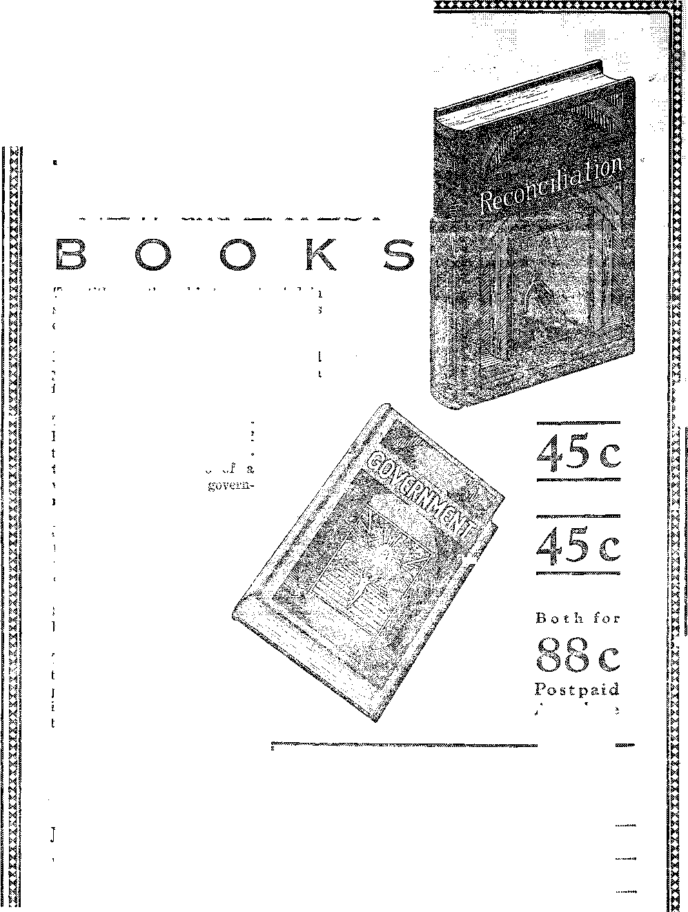

A JOURNAL OF FACT HOPE AND' COURAGE
this isMie
OBSERVATIONS ON SOUND
CHURCHIANITY ■
interesting criticisms
ORIGIN OF OBREGON MURDER
CRUELTY IN ASYLUMS
GOD’S COVENANT FOR
RECONCILIATION radiocast by Jn-3 ’-e Rutherford
Volume X - No.
November 14, 192 8
Contents
Labor and Economics
Novel Way of Ending Strike . . . . . . . , . . . .
A M*S Out of Work ... . . . . . , . . . . • , . .
A Forward Look ...................
Switzerland Has Free Burial ............. » 115
Social and Educational The Gushing of the Heroes...............
A Word on Child Training...... .
Finance—Commerce—Transportation Who Owns ilie Raiironds?
Political—Domestic and Foreign
Trying to Help the Turkish People ............ 105
In Defense of Al Smith .........
Police Officers Are Human Beings ....
Origin or the Obregon 'Mcedf.k . .......... . , . 113
Science and Invention Some Observations ox Sound
Chemical Belt Surrounding the Eau.h ........ .
Home and Health
Cancer Caused by Chemical 1’otsoxs . . ; .
Northern State Hospital of Washingto..
Travel and Miscellany
Traces of Truth in Indian Legends
Religion and Philosophy
London’s Church Attendance Ducim vted . ....... ,
Ralph Connor Lands in Hell in a Filibeg
Pastor Advises I.ess Bible Study .
Stoning of Bible Students at South Amboy
Churchianity Versus Christianity
Ax Appreciative Listener .....
The Devil’s Fight Against the Truth .
God’s Covenant for Reconciliation ....
The Serpent at Kns.i ath-septier
The Children’s Own Radio Story .......... .
Copartners and Proprietors Address: 117 Adams Street, Brooklyn, 1., U. 5. .1. CLAYTON J. WOODWORTH.. Editor ROBERT J. MARTIN .. Business Manager NATHAN H. KNORR .. Secretary and Treasurer
Five Cents a Copy—$1.00 A Year Make Remittances to THE GOLDEN AGE Notice to Subscribers: Wo do not, as a rule, send am acknowledgment of a renewal or a new subscription. A renewal Mank (carrying notice of expiration; is sentwith the journal one mont h before the subscription expires. Change of address, when requested, may be expected to appear on address label within one month.
Foreign Offices
British ....... 34 Craven Terrace, London, W. 2, England Ganadlan ..... 40 Irwin Avenue, Toronto 5. Ontario, Canada Australasian ..... 405 Collins Street, Melbourne, Australia South African ..... 6 Lelie Street, Cape Town, South Africa
Entered as second-class matter at Brooklyn, N, Y., under the Act of March 3, 1879.
Volume X
BrooHysa, N. Y«, Wednesday, November 14, 1928
Number 239
Some Observations on Sound
THE source of a sound is usually an elastic body distorted from its normal shape and released, vibrating more or less symmetrically about this normal shape or position. The distance from a point in one impulse to the corresponding point in the next impulse is called the wave length of the sound. The frequency of these waves as they strike the ear determines the pitch of the sound.
The sounds which we hear coming from stringed instruments come, not from the strings, but from the sounding boards. It is infinitely more important to have a good violin than it is to have good strings on it. As violin strings cut through the air they communicate almost no motion to it and therefore emit practically no sound directly.
In the human throat, air from the lungs is blown over elastic vocal cords and their vibrations are communicated to the air after being-projected against the roof of the mouth as a sounding board. Good singers have the roofs of their mouths highly arched.
Sound pulses which reach the air with sufficient frequency and regularity become changed from mere noises into musical tones. Two hundred and sixty-four pulsations per second give the tone called middle C. Fewer pulsations per second give lower tones; more pulsations per second give higher tones, or, as it is termed, higher pitch.
OUND may be conveyed by any elastic substance. If produced in free air, at a distance from all obstacles, it spreads in spherical waves, (iinrinishiug as it spreads over greater and greater surfaces. In the air sound travels approximately 1100 feet per second, but the velocity varies with the temperature and other circumstances. In water sound travels four times as fast as in air.
Sound can 'be conveyed by any elastic su|| stance. Place a watch on a table, smother it with a pillow so that its ticking can not be heard, put the ear to the edge of the table and the ticking of the watch will be heard coming through the wood, strong and clear.
When a gun is fired five miles away at sea there are two reports. The first one comes through the water in about six seconds. Twenty seconds later conies the report transmitted through the air.
The noise in a vehicle is much less 'when it.is loaded than when it is empty. This is because the bodies and clothing of the passengers absorb many of the sound waves.
Sound waves may be bent by passing the® through large thin-walled spherical balloons. When the balloons are filled with heavy gas the sounds converge; when filled with lighter gas they diverge.
A curious but unintentional example of sound diversion occurred in the British House of Parliament when a shaft of warm air, rising through a large ventilator in the floor, so diverted the sound that a speaker on either side of it could not be heard by one sitting on the opposite side.
Reverberation conies when sound waves hit solid walls and rebound, sometimes echoing scores of times before they come to rest. Reverberation is corrected by coffering or deeply 1’eeessing plastered walls.
The Human Sound Receptacle
THE air ripples set up by sound pass through the outer ear in man and beat against the ear drum which covers and protects the middle ear. In the middle ear are three little bones, the hammer, the anvil and the stirrup, the uses of which are to convey the sounds to the inner ear, the cochlea, the exquisite harp of 2700 strings which baffles and shames the atheist.
Man has heard volcanic explosions at 2000 illites. Ue can hear artillery firing at .150 miles, a railway whistle at two miles and the noise of a train at 8200 feet. A balloonist has heard the report of a rifle and the bark of a dog at 5900 feet, the beating of a drum at 4.550 feet, the rolling of a cart at 3255 feet, the croak of frogs at 3000 feet, the note of a cricket at 2500 feet and the voice of man at 1.600 feet. The cry of a babe has the greatest carrying- power of any human articulation. This is to make sure that its wants will receive attention.
The trained ear can distinguish sounds to as low as sixteen vibrations per second and up to as high as 40,000 vibrations. The untrained ear does well to hear as low as 24 vibrations and as high as 30,000. We hear even in our sleep. The passing of a street ear raises the blood pressure, even though the sleeper remains fast asleep.
BATS are guided in their flight, at night by echoes which come hack to them from shrill notes which, they send out from little noisemaking centers in their wings. These noises are so shrill that they can not be heard at all by human ears.
The air is full of sounds that man can not hear, but they mean, life or death to the insects and to the birds and other creatures that make their living by secondary methods. Watch- the ears of cats and dogs and see how responsive they are to sounds you can not detect.
Everybody remembers the story of the holy geese in the holy temple of the holy city and how the holy Roman soldiers were awakened by them, when the wicked heathen Goths tried to climb up into the Capitoline Hill one stormy night. The holy geese saved the holy city by squawking at the .right time. Thus the holy fires in the holy temple did not go out but continued to smoke, holy smoke. We still have the holy candles with us!
Reptiles have ears, fishes have ears, worms have ears, and whales have ears. The dip of an oar is enough to send a whale out of sight beneath the waves. In the effort to accommodate himself to the rising din about him which is making him partly deaf, it is said man’s ears are getting larger and larger. We do not know if this is true.
By means of mechanical ears, which transform inaudible sounds into audible ones, or into visible signals, man is able to hear nr sec: the roar of a magnet as it picks up a piece of iron, or the shrill sounds of inaudible foghorns set to guide ships into port in a fog.
A mechanical ear attached to the outside of a dwelling enables a detective to hear the conversation carried on within, or to detect a gun fired 135 miles away. It is hoped that man may yet set up silent sounds that will destroy or entrap insects and other pests.
Man can sense some of the low sounds which he can not hear when the floor beneath him in a church trembles from the deepest notes of the organ, pitched so low that while his body can feel the vibrations, his ears can not hear them at all, though a trained ear may be able to do so.
TXT HEN the Britishers hear about American * ’ bells and locomotive whistles and the unending racket which they make from one end of the land to the other, day and night for ever and ever, they smile incredulously. They think we are joking. Over there they have no grade crossings. Incidentally, that one little item saves them 5,000 funerals a year.
At Van Wert, Ohio, in 1925, a Pennsylvania train, running through a heavy fog, struck a. school hack, even though the whistle had been blown, and the hack driver had walked on the tracks to listen before speeding into the path of the onrushing train. Seventeen children were killed in that wreck.
Investigations were subsequently made to see whether locomotive whistles could not be differently pitched. It is thought that if all locomotive and traction whistles were of one pitch, and nothing else could use it, the ear would soon become accustomed to instinctively associating it with danger.
Western lines are experimenting with musical locomotive wl.iistl.es, soft, cooing, in place of the screech-owl type generally used. Sirens audible at three miles are used on the Southern Pacific lines in California. The direct annual cost, in coal and water, of operating railroad whistles is figured at eight million dollars for the United States alone.
A siren is a very simple .form of whistle. It consists of two circular discs, the one fixed, the other pivoted to revolve nearly in contact with it. Both dises are pierced by a circle or circles of holes through which steam or compressed air escapes as the holes in the two discs come opposite one another.
Sound is much affected by atmospheric conditions, topography and buildings, so that a blast from a single whistle can not always be heard for any great distance in a specified direction. Some have expressed the belief that the locomotive whistle, like the headlight, should be reflected forward, to confine the sound, as far as possible, to the region ahead.
Unexplainable and Unnecessary Sounds
MYSTERIOUS noises in the sky have been heard within the past few years in various parts of the earth, notably in Georgia, North Carolina, Pennsylvania, the Mississippi valley and Honduras; also over London. Though the skies were clear, these explosions were so severe as to shake the houses. At last reports the scientists grappling with this problem had not been able to suggest any reasonable theory to account for them.
In various places in the earth street criers rend the air with cries which seem to accomplish little except to lacerate the nerves of all in the neighborhood. Such cries were much more common once than now. Hand-organs and streetbands are largely things of the past.
Riveting machines are passing out. One man with an electric welder can do what four men did with the riveter and do it quietly, and do it better. Barking dogs are a nuisance in a city and a menace anywhere. City dwellers, with their nerves torn by the racket, do not find the same delight in being awakened by crowing roosters as do some others of mankind.
Of all noises in the city and out of it, the one that seems to be the greatest general nuisance is the unrefined, coarse, blatant, discourteous squawk from the automobile. It speaks for itself. That it accomplishes its purpose of giving sudden alarm is not to be questioned, but there are some kinds of horns that are less beastly than others.
The tooting of an auto horn in front of a house is illegal and indefensible, if its object is to arouse the inhabitants of the house. There are other and better ways to accomplish that end. Yet it is often done by those (and they are many) who never think of anybody but themselves. Why anybody should awaken a whole neighborhood because he wishes to speak to one person who can be awakened otherwise, is a mystery.
A study of the noise of New York city charges forty percent of it to aut>» trucks, twenty-five percent to the elevated railway, twenty percent ■to surface cars of the street railway, and the balance to automobiles, taxicabs, fire apparatus, horse-drawn vehicles and excavating and building operations.
THE little machine for measuring the volume of noise in a given vicinity is called the: audiometeri By means of this instrument it has been discovered that at the brink of the Canadian-Horseshoe Falls of Niagara there is no greater volume of.noise than is sometimes equaled at New York’s busiest corner. That corner is fixed as being at Broadway, Thirty-fourth Street and Sixth Avenue. At this point there is an elevated railway, three sets of double street car tracks and an exceedingly heavy six-way traffic. "”Two sets of subway lines and two railway lines are too far below- the surface to add to the noise, but they do add to the traffic.
Oddly enough the noise map of New York shows that the quietest place in the city is in a subway station when all trains are far enough away to send back no roar. As a rule the noise map of the city is almost identical, with its traffic map, but not quite.
Cottagers near bodies of water complain of unnecessary noises by motor boats. Britain estimates its cost in fatigue due to jazz bands as not far from one million pounds a week. As one long-suffering Briton put it, he wishes they ■would take the din out of dinner and restore the rest to restaurant. There is some agitation in Britain for a public health noise abatement act.
WHY should some sounds, disturb one, and other sounds which to others seem worse have no effect on him? Here enters the human nervous system; and strange are its ways. Let us have a scientific explanation. It is worth reading, because of the nice way in 'which it tells us something we already know: It is Helmholtz’s explanation of why a discordant note offends the ear:
The essence of dissonance consists merely in very rapid beats or changes in intensity of the sound. Two consonant tones flow on quietly side by side in an undisturbed stream; dissonant tones cut each other up into separate pulses. These pulses may be too rapid for the ear to separate, but their existence may be demonstrated. The nerves of hearing feel these rapid beats as rough and unpleasant because every intermittent excitement of any nervous apparatus affects us more powerfully than one that lasts unaltered.
It is i h<■ odd way .that this works out in everyday life that is interesting. The Syrians and many others enjoy music that is full of half and quarter tones that are painful to the ears of others; but having become accustomed to it they like it. Jazz is in the same class.
New York had the odd example within the past year of two riveters perched in the ironwork of a towering building, pleading with a lady who was practising scales in a studio opposite their rattling machine guns. They begged her to stop her racket, as it upset their nerves. It is well known that the city dweller is as much upset by the odd sounds of the country as his country cousin is by the racket of the city when he comes to town.
A stationary engineer works for hours on end in a deafening roar, but let an usual sound come from the engine, a bit of grinding or scraping, he hears it instantly and is alert to locate the trouble. It is not so much the noise as the unusual noise which distresses.
Many people sing when in the bathroom. The reason is because the note is struck for them by the running water. The reason why work in a noisy office is so distracting is because of the unusual noises. The click of the typewriter does not disturb. One gets used to that; but conversation, singing, whistling, the ringing of the telephone!!!
The Search for Quietude
ER-MANY lias offered, the modest sum of $200 as a reward to the engineer devising the best plan to eliminate unnecessary noises from the city. In. this country we pay millions of dollars to prize fighters and Teapot Dome statesmen who spend only a few minutes in their breath-taking' exploits. Look at the way we reward public service thieves. What strange people these Germans are! No wonder we wanted to make the world safe for hypocrisy.
The only quiet places in New York are in the interior of blocks and in the tops of skyscrapers. Street noises hit the walls of the buildings and ascend in heavy volume ten. floors, after which, they gradually die out until, when the twentieth floor is reached, they are well dissipated. Vessels in the harbor are a greater annoyance on the top floors than lo wer down. Unnecessary noises from tugboats and other harbor vessels have been much reduced in New-York in recent years, as a result of determined efforts to that end.
It has long been recognized that quiet should reign in hospitals and in their surroundings. The sick do better where it is quiet So do the well. Removal from a noisy place to a quiet one is as good as a vacation. Silence soothes the bruised nerves of the ears.
London is as quiet as a graveyard, compared with New York. There are few autos, ancl they travel quietly. There are few phonographs. Even the children seem quiet about their games. Yet the Londoners are beginning to complain of the noise of a noisy age.
In Paris a nervous play-writer, M. Bernstein, had an architect design a supposedly soundproof room; but in spite of padded walls, two feet thick and stuffed with sawdust, he found that his sensitive ears picked up as much noise as ever. Ue gave up the fight and went to a hotel
Herbert Spencer valued, silence so much that rather than waste his time listening to a conversation which he saw was becoming unprofitable lie wore ear-muffs which he impolitely drew down when he began to suffer. These earmuffs contained little wax cones with which he closed the portals of his ears.
Grenville Kleiser, writing on the value of silence, says:
Great is the power of silence. There is nothing more eloquent than the still small voice of conscience. Think of the silent growth of the forest. The world upon which you now stand is whirling silently through space. The great forces of nature are silent. How wonderful is the silent power of truth, constantly at work, without effort, sound or confusion. Only man is wasteful, prodigally squandering words, speech and energy. Silence will help you to solve personal problems. Silence is golden. Silence will give you rest from inordinate ambition and desire. Silence will promote quietness of spirit. Words are squandered in useless daily talk. The loss of time and energy from this source alone is incalculable. Add to this the incessant noise, alike in the country and cities, and the need of some counteracting influence is obvious.
WE HAVE already mentioned the sound .house at Calais, France, which guides ships into the harbor in a dense fog which light can not penetrate. The sounds sent forth from ■it are inaudible to human ears, but are picked up by mechanical devices.
Super-sounds have been produced up to 300,000 vibrations per second. This was done by what is called a piezo-electric oscillator. At this rate these sound waves do not register in the air. Frogs and fish died within a few minutes when the waves passed through the waters in which they swam. One-celled organisms, called paramecium, broke in pieces.
By means of the hydrophone, much used during the World War, any water sound may be magnified any number of times desired. The addition of each vacuum valve after the first squares the volume of sound. With one valve the sound is magnified seven times, with two valves forty-nine times, with three valves forty-nine times forty-nine times, and so on. The footsteps of a fly may be made to sound like the roar of heavy artillery. The geophone does for land sounds what the hydrophone does for water sounds.
Everybody knows that we have thousands of sound waves of all kinds passing through our bodies constantly. If we wish to get any of them not audible to our ears we have to go to our radio receiving apparatus. A perfect receiving apparatus could receive every sound in the world.
A loud speaker’ device uses a new series of sound waves. They travel at twice the speed of ordinary sound waves and are capable of hurling the human voice many miles. Shall we praise this inventor or lock him up ’ Who v ould want to live in a world where titantic bellowers could project their words in tones stupendous? Even Spencer’s ear-muffs hold out no hope.
The exponential horn, So called, is a new invention which broadcasts the natural human voice or tones of musical instruments'without distortion. At a mile it is claimed to function perfectly. The secret of the horn’s volume lies in a mathematieally-precise enlargement of the tone chamber, which is four feet square.
The Toepier method of sound photography has been greatly improved upon recently by the discovery that sound waves produced between a point source and a photographic plate east shadows on that plate. The twinkling of stars and the phenomenon of heat rising from the ground, both caused by varying density of the air, are keys to the new method.
By the Osiso, which transforms sound into a pencil-point of light, the totally deaf may understand speech by viewing the audio-frequency waves of the output of any good radio receiving set or telephone. The receiving is done on a series of revolving mirrors.
By a German invention, patented by the firm of Mertens, books and papers printed in a certain kind of ink may be heard by the blind, but the form intended to be used is a series of dots and. dashes printed on a tape. It is necessary that the blind person be familiar with telegraphy.
TX;,AN article in the London Daily News, Lloyd George says in part:
A religious weekly which from time to time has for nearly a generation conducted a census of the attendance at the places of -vgprship of the various denominations in London, at the last return revealed a sensational diminution in the numbers at both morning and evening services.
This experience could be repeated in probably every city and town throughout the land. There is a marked decline in Sunday school attendance. Charabancs in their stimulation of a new wanderlust have a large share of the responsibility for this state of things.
Petrol has declared war or- the pulpit, and for the moment it is winning.
The preacher sees his armies decimated before his eyes, and he is finding increasing difficulty in obtaining recruits to.»fill up the gaps. The crowd around the altars of the priesthood is visibly thinning. Meanwhile the shrines of nature are thronging with adorers every Sunday. The sunshine, the verdure, the pure, reviving air of the country are joyous and invigorating realities which give life to weary multitudes.
At a time when there is a. sense of gloomy disappointment with a religion that failed to prevent war, even if it ever tried, these allurements are proving disastrous to our churches. So far there has been no serious attempt made to reconcile the conflicting appeals of church and charabanc; so the former continues to wane and the latter to thrive.
EIGHT hundred clothing workers in Milwaukee, after being on strike six months, opened a factory and went into business on their own account. They have already secured ' clothing contracts that will keep them busy for ' months and have even taken business ■ that would normally have gone to their old employers.
WOULD you believe it that the Alice Foote Macdougal Coffee Shops of New York city not only do not pay their waitresses anything, but require them to pay $10 a week for their jobs ? Seems hard to imagine any concern that far down in the scale, doesn’t it ? The tipping system is bad enough, but to shake down the employes of part of their tips is the outside limit.
rpWENTY-FOUR college girls from universi-•JL ties and colleges in thirteen states came to Chicago without letters of introduction, to see if they could earn their own living as working gilds. They pooled their earnings, worked at all kinds of menial and unpleasant jobs, and at the end of their six weeks’ experience had less than 83c each, per week above their expenses. They conclude that, in its present condition, the world is an intolerable place for honest, industrious, intelligent Avorking girls, The world's favors are for its Dohenys, Daughertys, Falls, Stewarts and Hayses. It is a devil’s world.
aetlett Cormack, a converted reporter, detailed to write up the gushing of the heroes on their return from the World. War, tells us in the New Republic that lie had to manufacture all the gush; that the returned men were sore as boils at everything connected with it; that they knew the Germans had been lied about; that the atrocities never existed except in the mind of liars; and that they would like to see the' uimmntipnables that would get them into another nor. Ure furiher sins that when he had done as he was bid to do and turned in copy glorifying tb<* wai and what was gained by it |h|iitityi<liBoy:Wotild-: eyenchold his nose as he
T) HILADELPTIIA bootleggers are on the run.
Fifteen of them have deposited $10,000,000 in local banks in the last year. In every instance the depositors gave fictitious names and ileti-tious addresses. Saloon-keepers, gunmen, and police were found to be in partnership, the usual combination. Philadelphia is a picture of
America under prohibition. ■
BY THE use of au air shuttle service between
Chicago and Cleveland, Chicago business men are now able to leave the .municipal airport there at 5:20 p.m. and catch a train at Cleveland which lands them in New York at 9: 50 a.m. the next day. Returning they leave New York at 6: 00 p.m. and, changing to airplane at Cleveland, arrive in Chicago at 8: 45 a.m.
WITHIN three minutes after New York’s recent subway crash a squad of police arrived on the job and met two policemen already out of the subway with their second load of injured. In fifteen minutes police lines extended for seven blocks, and in less than half an hour two hundred policemen were each working effectively at some phase of the rescue work; searchlights were flooding the subway and acetylene torches were cutting through the steel cars to reach those entrapped. By morning only one of the dead was unidentified and only a few of the injured.
HE American Rolling Mill Company says that there are 868,801 holders of railroad stock, 1,000,000 holders'of railroad bonds, 71,-000,000 persons whose insurance funds are tied up in railroads, 46,000,000 savings bank depositors whose savings are in the same place, 1,000,-000 college students whose alma maters are endowed with railroad securities; and then it says hopefully that ”thus the money received by the railroads each ymir again returns, directly or indirectly, to practically every responsible person in the United Slates’’. That means that if you don’t get some of these benefits you are not responsible. And, obviously, if you object to the present plan, you are not responsible either,
lore
]\4TAN¥ loans by United States hankers to xVA foreign countries provide that in eases of default the bankers shall install representatives as collectors of customs. The inevitable result of such contracts is a call on Uncle Sam to see that the collector is appointed and placed; and that means the landing of marines and war if there is any resistance.
ERSEY auto speed has been raised to forty miles in the country and thirty miles in cities. Pedestrians must cross on crosswalks and are governed by the lights, the same as autos, but when they have started to cross with the proper signals have the right of way over autos. Garage owners must report every damaged machine within ttventy-four hours of receipt.
GERMAN scientist has established that the weight of man's indoor clothing is four times that of woman’s and that the temperature inside the men’s clothing is seven degrees higher.than in that of the women. Both men and women admit that men’s clothing is an atrocity, but the men are afraid of being jeered by one another and do not dare follow the path to freedom and health. The women have gained liberty and health, and their present sensi ble dress looks far better than the dowdy garments of the past.
EFERRING to the movement toward lower wages for the workers, the Chicago Trib~ we well says : “The lowering of income can result only in less schooling for the children, a meaner diet, more crowded homes, poorer clothing. fewer recreations and a lessened ability to meet misfortune that must be expected in every ■family. -Reduced incomes must result, as well, in a general lowering of the purchasing power of scores of mining communities throughout the state, a reduction which will be reflected mot only in th«> reduced prosperity of the retailors in these communities, but also in the Edgers of the manufacturers, wholesalers and jobbers who supply these tradesimm.” The Tribune adds that a reduced standard of living makes workmen sullen; and it is so,
THE Sficnti/ie American presents a picture of the 2,533 pieces of metal, beads, glass, screws, coins, pins, washers, and nuts taken from the stomach of a poor woman in Canada whose insanity took the form of swallowing everything in sight. A still more difficult thing to swallow is the doctrine of eternal torment, but some people manage to get it down somehow.
MAY a woman travel around with bare arms on a hot summer day or may she not? The Pope and some of the bishops say she may not, but she is doing it anyway. The past season has been particularly hot and dry in Europe. The tourists have worn less than ever, and the general consensus is that in trying to regulate women's clothes the old-timers have met their Waterloo.
N ENGLISH clergyman, Rev. John Bevan, at the Congregational Conference at Oxford made the statement that “the Old. Testament could be dispensed with”. There is another thing that could be dispensed with, and with much greater profit, and that is the sanctimonious, whining, begging, hypocritical clergy that are supposed to teach that same Old Testament and its associate book, the New Testament, and have neither knowledge of nor belief in the contents of either one. Of what earthly or heavenly benefit are they to man ?
IN THE effort tu help "lie Turkish people U:e
Turkish Minister of the Interior requires each province three times a year to supply the following information: f
What arts and industries are decaying,. ■andWhyli Hew can they be restored? y
What are the social conditions in the province1 How is capital distributed among the inhabitants'? What are the main causes of poverty and lack of comfort'? Are there any unemployed and in what numbers? What should be done to find them, work?
Are there in the region any oppressors or feudal lords, and, if so, how can they be eliminated?
Are calumny and backbiting prevalent, and how can theyjfee suppressed?'. ... ?.< - -< . ■ ; cw cwWW
Is the movement of population advancing or receding? At what age does mortality chiefly begin? What is the position of infant mortality and the
the province? Are there Is- malaria, tuberculosis, or syphilis prevalent ?
What is the position of primary education? In what proportion do children of age to receive compulsory ||i|i|OOtlO|den.t the schools? What is the number of people knowing how to read and
BtttWhat is. the number of bridges, roads, hospitals, kigiid libraries, and what measures can be taken to IldHilhp them ?
- Pennsylvania’s New Stockholders
THE Pennsylvania Railroad has added 101,-000 new stockholders to its list, all from its own employes. Their average purchases are three and one-half shares each, at par. This is a step in the direction of government ownership, and. a proper step. The people should own their transportation systems.
New York’s Pneumatic Mail System
OVER half the letters between Brooklyn and
New York post offices are carried by pneumatic tube. The cartridges, two feet in length, each cany 500 to 700 letters and are propelled at thirty7 miles an hour. A cartridge can be shot every sixteen seconds. Tubes also extend the u hole length of New York city from the Custom House to 125th Street, serving postal substations on the way. The system has worked perfectly for five years.
A FTER a partial survey of prisons in which federal prisoners are kept the Congressional investigation committee declares that in the Tombs Prison, New York, the Moyamensing Prison, Philadelphia, the Omaha City Jail and the Cuyahoga County Jail in Cleveland the conditions are terrible and even the medieval conception of humanity is forgotten. The Cuyahoga County Jail'was the worst one of the bunch.
rpiIE Pickwick Stages System, operating on : the Pacific Coast, is putting into operation
all-metal nitecoaches with sleeping accommodations for twenty-six passengers. The cars .have . a driver, a steward and a porter. Meals are served. There is a lavatory.
Power Trust Works Thoroughly
THE Power Trust claims that in debauching the teachers of the country they have overlooked nothing and nobody from the eighth . grade up to the state superintendents of public instruction. Moreover, they.have carefully scrutinized every line of economics used in the schools, and if a book teaching the truth regarding'-public ownership advantages was on the list they have used every power to get it re-' moved.
A MAN out of work is not a pleasant man.
How can he be? Such a man wrote a letter to the financial writer B. C. Forbes in which he said some unpleasant things. Mr. Forbes had the courage to print it. We quote three paragraphs. They are not nice, but they contain some things that should make us all stop and think:
You, like the rest of the hirelings, prostituting your mentality to the interest of the big business whole hogs (and God knows that’s flattering them), like to sneer and snap at the “whinings” of the failures— riie protests of those who are driven to the river, as I probably shortly shall be, because I am denied the riglit to make an honest living in a country overflowing with plenty; in a country which B. McFaul says m. the 3 ale Rcvicu; is easily capable of supporting five or six times its present population in absolute comfort: in a country in which, despite the fact that there have been bumper crop yields—actually overproduction in all lines, agricultural and manufacturing—there have been between six and seven millions of people out of work, and in a country which, according to Irving Fisher, makes it the hardest kind of a task for eighty percent of the population to eke out a bare existence.
On the other hand, the whole hogs you are in the contemptible business of defending have been increasing by leaps, and bounds. Twenty-five years ago, the apex of wealth was estimated at about a quarter of a billion. Today we have swine whose wealth is estimated at over two billion—two of them at least—another at over a billion, and hundreds over the quarter of a billion mark. The 30,000 figure explains very graphically where all the prosperity is going.
Our farmers, performing ten, twelve and fourteen hours each day of hard labor in the hot sun, receive, in most instances, less than two percent on their investment, while our elite bankers, lolling around in luxuriously furnished offices in palatial bank buildings for a few hours each day, and spending the balance of their time on artistically horticultured golf links, reap fifty percent on their investment.
HE following lignros were compiled from reccm statistics. A high degree .?f accuracy is not claimed, but a sufficiently near approximation thereto has been attained to enable us to view present conditions in comparison with the futirro from an unusual angle.
Popalctiimt of the United States -
Engaged- in various occupations Men and women, 16 to 65 .............................. 45,000,000
Married women keeping house.................. 21,000,000
Total more or less usefully engaged...... 66,000,000
■ Nonproductive classes
Children, 1 to 15 ...................................................... 36,000,000
Idle men and women, 16 to 65 .................. 10,000,000
Aged men and women, 65 and over...... 3,500,000
Average number of workers
temporarily sick .......*...................................... 500,000
Criminals ....................................................... 350,000
Blind, deaf or otherwise partly or - ’
wholly disabled............................................. 150,000
Total more or less nonproductive............ 50,500,000
Grand total............................ 116,500,000
This is representative, in a Way, of all nations, although conditions differ greatly in other countries.
Under the conditions of God’s kingdom, now being established in the earth, the efficiency of the working population will be much increased, for several reasons. For example, (1) they will be rapidly lifted to higher levels, physically and mentally, advancing toward perfection. (Acts 3: 21) (2) As the centuries pass and life lengthens and the people find themselves free from sickness and with no traces of did age or decay, ’ they wall naturally accumulate greater funds of knowledge and greatly increased skill in all the arts, crafts and professions. (3) The perfooted organization of society with its control and direction of human activities by competent and unselfish authorities, will result in happy and satisfactory working conditions for every one and in giving each individual the opportunity to develop his best powers under favorable conditions. This alone will probably more than
double present production........Isa. 65:17-25: 66:
22,23: Kev. 21 :l-5. '
There will he no more marriage and no more children. (Luke 20:35; Isa. 65:20) There will be no idle classes, cither poor or rich. (Isa. 65: 22,23; Prov. 19:15; Isa. 1:19) There wdl be no incapacity by reason of old age (Isa. 65: 20: ' Job 33:19-25); or by reason of sickness. (Isa, 33:24; Luke 5:23-25; Heb. 10:17) There will be no criminal class. (Isa. 11:9: 13:9: Ps. 72: 7,9: Acts 3:23) There will be no more blind, deaf, dumb, lame or otherwise partly or wholly disabled.—-Isa. 35: 5, 6.
All the nonproductive classes will disappear in time, although there will he children and old people coming up in the resurrection for hundreds of years, only to grow up nr to grow’ young, as the ease may he. When the resurrection is complete these classes will have fully disappeared. :
While the resurrection is progressing the population of the earth will steadily increase, because only those who choose to be '.ricked will be cut off in the second death. ' .. ■
When the resurrection is complete the earth will be fully populated with highly efficient, productive workers, every one doing his share for c A the common good of all, and all nonproductive factors will be eliminated. x
What will happen to the eight-hour day as a result of more than twice doubling production?
In addition to the above it may safely be anticipated that the steady progress of invention for a long time to come will add much more to the power of production of human workers.
It is not hard to visualize conditions of the future. They will surely be such that men will have little to do besides attend to the operation of machinery, and that for only a few hours each day, the remainder of their time bmrg spent in enjoying the glories of earth, .and in cultivating their higher powers. Music, art, sculpture, refinements of every kind, will be enjoyed By all to an extent now unrealized by even- •• the most favored. •
Thy kingdom come!
oho-o [From•Montreal Daily Star}
NERVOUS curate (giving out notices): and the subject next Friday will be ‘Hell’. The “The vicar will continue his pleasant series vicar hopes'to see you all there. The collection of Friday evening addresses in the parish hall, will be for the new heating apparatus.”
I AM a great admirer of your fearless truth-seeking magazine, but in your article, “Laws Binding on Al Smith,” I think you do him a '■great injustice. There is no law binding on any man who is fearlessly standing up for truth and justice. I am a Protestant, but we sprang from 'his church, through men who would not allow the church to dictate to them with laws that did • not appeal to them.
Treat a man as you find him, no matter what church he goes to. A.1 Smith has allowed no bigotry to rule hint in his dealings with others of different views from his. Why should we ■show any toward him because of church laws centuries old? Four times governor of New York, I believe his state has given the Bible Students more privileges than has our state of Pennsylvania with its Protestant governor.
What church law was ruling that Baptist clergyman of New Jersey who was coming with a hundred members of his flock to take the law into their own hands and clean up the Bible Students who were then on trial for selling books in South Amboy without a license ? Could anything be more anarchic ? And who is meddling more in. polities than our Protestant clergy? They claim it’s a good cause; but God never gave the church any other weapon to use than moral suasion where personal rights are concerned.
Laws infringing on personal rights are tyranny, can not command respect, and lead to a condition that calls for a big upheaval and a reformation leading back to the law's respect of personal rights before the people can again be made to have the respect, they should have for the law. Al Smith has stood for all those good qualities; so let us be as broad as he and give him credit for what he has been and not for what he might be.
[We publish the foregoing because it presents an apgle that should be kept in front, namely, that of tolerance. Nevertheless, we are constrained to wonder why the Roman Catholic Church should continue to have laws on its books which call for the murder of heretics and the expropriation of their property unless they hope some time to be able to put those laws again in force. We doubt if they get the chance, but that is beside the mark.
Out in the service work we occasionally meet people who. when addressed in the kindest, most friendly way, respond with almost unbelievable meanness and bitterness. In nine cases out of ten, if we ask, “Pardon me, may I ask if you are a Catholic?’’ the answer' comes back, “Yes.”
The question naturally .arises, If the bitterness is so often expressed, is it not a sure sign that it is really there and is being nurtured by the laws and rules and regulations of the church which ought to be repudiated but are not repudiated by those in her high councils ?
Mr. Smith must know of these laws. They have been called to his attention often enough. Why does lie not repudiate them openly, frankly, courageously, and" say, “If the Catholic church stands for the murder of one’s fellow men and the sequestration of their property because of their belief, then I am not a Catholic.” But he does not dare to do that and probably does not wish to do it, nor does any other Catholic.
Wo admit that we would eheei’fully trust the institution with which. Mr. Smith is connected as far as we would the Methodist church, the Baptist, .church, or any other of those churches of the now dark ages, but that would be only as far as a five-day-old’infant could throw a cast-iron bull 'by the tail. These institutions neither teach nor .practise truthfulness, honesty, tolerance or humanity, and are a curse to the earth. Let* the World War speak for itself.—Ed.] ■
T SHOULD like tc see all school children def-A ffiitely taught to be kind to animals and birds. Apart from the benefit to creatures who have no say in their own fate, this would have a most civilizing effect. Proper treatment of criminals, drunkards, lunatics, prostitutes, of the outcast and the helpless generally, is intimately interwoven with early education in the proper treatment of animals and birds. To
• ■ ’ : ■ ■ 108
a considerable extent, criminality arises from the injudicious and unkindly pressure of life. Childreip. can hardly be taught how to deal with the :un satisfactory grown-up of their own species ; hut' if taught, as they easily can be, to treat birds and. animals well, they will grow up naturally, with a kindlier and more judicious attitude in all the practical affairs of life.
POLICE officers aw human beings. This was demonstrated reeenih at South Amboy.
N. J., where they did what they were told, but where at the trial they showed that their hearts were not in the work of arresting inoffensive .....Bible Students; and when no others appeared against them they showed no interest in the ease.
A week before the Detroit Convention a party of Paterson (N. J.) Bible Students were canvassing Port Jervis, N. Y., which lies sixty-five miles from home, on the edge of our territory. About three o’clock the friends began to be stopped, and as the next week was Convention week they thought they had better cease work without any argument; but as I had not been arrested, and knew I had a perfect right to engage in the Lord’s work in this way, I continued working.
At length an officer came along and said, “Yon will have to cut that out; you can not canvass here on Sunday.” I said,'“Why not?” He said: “To do that you must see the mayor or chief of police.” “Who gave them authority to issue permits for preaching the gospel ?” I asked. He replied: “I don’t know anything about that. I’ve received instructions to stop you people from canvassing, and before you do any more you will have to see the Chief.” As I insisted that I had a perfect right to engage in this method of preaching and didn’t want to be interfered with, he decided to take me down to headquarters immediately.
My car was just around the corner; so I invited him to ride down with me. On the way to the police station I had an opportunity to explain our work and methods more in detail, and he agreed that there was no harm done and that as far as he was concerned he didn’t care if there were a thousand Bible Students canvassing in Port Jervis. Arrived at headquarters the officer said: “'This man was selling books; he would not stop, and I brought him ■down.”
There seems to be something about the possession of a uniform and brass buttons that makes some men think they are a little above the human and that common people who enter their presence arc to he treated like dogs, for the Chief turned ou me like a roaring lion and demanded: “Where are your credentials?” I said : “Credentials! I am a Christian and a citizen of the United States.” He said: “How many are there in your party?” I answered: “Fifteen.” He said: “You come sneaking into town and scatter all over the city and you did not come and ask permission.” I said: “Why should we? Why should we come and ask permission to do something that we have a perfect right to do?” lie said: “You can not canvass on Sunday.” I said: “You do not need a license to preach the gospel.” He said, “Fifty people have called up and said they did not wish to be annoyed." I said: “You have listened to their story. They do not know what they are talking about. Now hear the other side of it before you judge whether we are common peddlers and hook, agents.”
I then told him: “Our sole purpose in coming to Port Jervis is to preach the gospel, to bring to the citizens of this city a message that will gladden and cheer the hearts of all who are in distress and need of comfort. We are sending this message to the people every week by the use of over one hundred radio stations, and in order that those who hear it may investigate’ it more thoroughly, and also in order to stimulate and assist home Bible study, we are placing it before them in printed form. These four books which we are leaving for $1.63 contain the most vivid description of the Divine plan ever published. They contain conclusive evidence that Jehovah, the great Creator of heaven and earth, has a definite plan respecting mankind, definite time features in connection with that plan, and it is His intention to eventually bless man with life, liberty, health and happiness.”
He interrupted and said: “Hold on; you’re not going to preach any sermon to me.” J
I replied: “I'm not preaching any sermon to you, but simply stating facts in order for you to use your own reasoning faculties to determine whether or not we are peddlers and book agents.”
“'Well,” he said, “'you are selling books, because a lady called at my own door and wanted $1.63 for them.” I replied: “Did you buy them? And did she annoy you?” He said, “No, and furthermore you can’t sell any more books here on Sunday. If the people want to hear the gospel they can go to church.” I asked him which church they should go to, and he replied, "Any chwrchA I then told him that that was another reason why we were in Port Jervis, because the gospel was not being preached in any church
io»
in lids city, or in any church "between the Atlantic and the Pacific.
‘•'Well, then,” he said, “why don’t- you people hire a hall or tabernacle F I replied: “Because those methods are obsolete and we have discarded that, method for our present way, which is by using the radio and printing presses and calling on the people from house to house.”
“Well,” he said, “you can’t do any more of it here.” When I demanded to see the ordinance prohibiting it, he refused, and ordered us out of town : and when I asked him where he received authority to order us out of town he became very indignant, hammered the desk with his fist and talked so loud that he could be heard clear across the street.
I then said: “See here, Chief, I’m the one that has a perfect right to be indignant. As a citizen of the United States the Constitution grants me the right to worship God according to the dictates of my conscience; and it is your duty, as Chief of Police, to see that the Constitution is upheld, not to violate it. Whom are you working for, the citizens of Port Jervis or the fifty people who you claim ’phoned and wanted us stopped? Instead of sending men out to arrest us you should be giving your men instructions to see that we are not interfered with.”
“'Well,” he replied, “don't ,you know that- you can't make a legal sale on Sunday ? If you sell books for $1.63, is it legal?” I answered: “If you buy cigarettes or newspapers on Sunday, is that legal?”
He then said: “Your books may be all right, and I have no fault to find with you, but- you can’t do any more canvassing on Sunday; if you do you will be locked up.” “'All right,” I replied, “we are going to canvass, and I warn: you that if we are interfered with it will cost the City of Port Jervis some money. If the city wants a fight on its hands, we will accommodate it.”
“'Make one more canvass,” he replied, “and see how soon we fight.”
As the Convention was only a week away and it was four o’clock, we decided to postpone the conquest of Port Jervis until a future' date, which we hope will be in the near future.
This work is being directed by Jehovah. The fight is His fight, and we can rest assured that potty ordinances will not be permitted to interfere.
[On Sunday, September 23, Paterson workers and their friends to the number of thirty-one went to Port Jervis and finished their canvass of the city. As one of these gentlemen was completing his canvass his prospective customer said, in a friendly way, “Do you know to whom you are speaking?” The canvasser said, “No.” He replied, “I am the Chief of Police. One of your men was up here some- weeks ago and talked rather saucy. I had him down at the Station. We don’t mind your coming up here but we don ’t like to have the people bothered on Sundays.” AU. of this shows that the police, after all, are human beings like the rest of us, and, when they have matters explained to them, can see a point as well as anybody. The police should be treated with respect- in those things v,-herein they show regard for the laws of the land and the interests of all the people, including especially those who are representing the King of kings and Lord of lords; but the Lord's business comes first and is not at any time to be subordinated to the whims or tyrannies of men who assume rights which are not theirs and are trying to stop what they have no right to stop and what can not be stopped by any human power.—Ed.]
Ralph Connok, of Winnipeg, has in years gone by made a. hell for Bible Students in Canada and in the United States, has preached hell to- thousands of misguided unfortunates who did not know he was lying to them, and the most natural place for him to serve his chosen master is in some locality congenial to them both.
It is with peculiar interest, therefore,- that we notice a picture of the Reverend Ralph in a .Canadian paper of recent date, and beneath the illustration of a figure in kilts, with three medals pinned on his or her manly or unmanly bosom, these words: “'Ralph Connor, Canada’s well-known divine and author, who will conduct the open-air service in the Devil’s Cauldron, off the golf course, Sunday, September 2, at the Banff Highland Gathering.” -
This is the man who led the prohibition fight in Manitoba and of whom, after he had carried the fight, it was a matter of public knowledge
that a Lew nights hel'ore. burglars had broken into his house and entered his cellar and got so drunk tbar they broke up a lot of furniture but stole nothing, and that the preacher did not have enough courage to prosecute them.
lie is also the man who started the fight in
Canada against i!ie Bible Students, and is tinone responsible for the first arrest during the war and who made a threat, to carry the war into the States, and probably did. ■
No more fit man to deliver a service in the Devil’s Cauldron could be selected.
BY COURTESY of E. F. Kellner, Jr., now residing at Superior, Arizona, I have had the pleasure of reading an old history of Arizona, published in 1884. The book is entitled “History of Arizona Territory’'’ and was published by Wallace IV. Elliott & Co., of San Francisco. There are said to be only two copies in existence, one of them being in the Library of Congress, at Washington.'
All Arizonians have read of the massacre of the Oatman family by Indians in 1851, James Oatman, his wife and four children were beaten to death, one son was left on the scene of the tragedy as dead, and two daughters in their teens were made captives and forced to live many years with the Indians, Mojaves and Apaches.
-<■ Olive, one of the daughters, survived many years of Indian life; and through the efforts of - her brother who had been rescued by friendly
Pima Indians, she was rescued back to white civilization. She lived in New York many years after'her rescue. The other sister died while living with the Indians.
On page 93 of the old history I find a story about a strange Indian legend which the Indians taught Olive Oatman. It bears a striking resemblance to Scriptural truths concerning the flood. The history reads as follows:
An imposing mountain stands near the west bank of the Colorado [river] at the head of the Mojave Valley. It is the highest peak in sight, and is regarded with reverence by the Indians, who believe it to be the abode of the spirits of their departed.
' In the narrative of Miss Oatman, who was an Indian ■captive for many years, this mountain is alluded to. Her parents were murdered by Indians near Gila Bend on Gila River. The particulars are given elsewhere, Her description is interesting, as furnishing an additional example of the universality among the tribes of North American Indians of the tradition of a deluge.
‘ ‘ They told me, pointing to a high mountain at the ■ northern end of a valley, that, in ancient times there was a flood, which, covered all the world except, that mountain, and that by climbing it one family was saved from the general deluge; that this family was very large and had great riches, clothing, cattle, horses, and plenty to eat; that after the water subsided one of the family took all the cattle and one kind of clothing and went north, and was there turned from red to white; that another of the family took deer skins and bark, and from him the Indians have descended: that the progenitor of the whites had a red complexion until he stole, and then he became white; the remains of the old ‘big house’, in which this ancient family lived, were up there yet; also pieces of bottles, broken dishes, and remnants of all the various kinds of articles used by them.
‘ ‘ They said also that this venerated spot had been, since the flood, the abode of spirits, and that if the feet of mortals should presume to tread their enchanted land, a fire would burst from the mountain, and instantly consume, them. It is their belief that the spirit of every white'whom the Mojaves had been successful in slaying is held there in their perpetual chains, and doomed to the torment of quenchless fires, while the Mojave by whose hand the slaughter was perpetrated is exalted to eternal honors and superior privileges therefor.”
To the writer this legend is a weird confirmation of four great Scriptural truths, viz:
1. There was a world-wide flood which covered everything, possibly excepting the very top of some high mountain.
2. That one family was saved from the flood.
3. That somehow unseen spirits or demons came into existence at the time of the flood. ::
4. That the spirits are held in chains, prisoners.
There is also the suggestion of eternal torment which Satan so carefully cultivated so many hundreds of years among the white race.
THE Reverend Thomas H. Whelpley, pastor
.Mof Chelsea Presbyterian Church, New York city, is represented as having advised his congregation to study the Bible less and men more, ■'thus turning the instructions of our Lord and the apostles-and prophets exactly upside down.
The apostle did not say to Timothy, ‘From a child thou hast known all kinds of men, big men, little men, tall men, short men, fat men, thin men, rich men, poor men, beggar men, thief, doctor, lawyer, merchant, chief’; but he did say, “From a child thou hast known the holy scriptures, which are able to make thee wise unto salvation.”
Our Lord said, “This is eternal life, that they might know thee.” To know God was, in Jesus’ estimation, the greatest blessing of life. Jesus never advised His apostles to study man; but He did pray to the Father, “Sanetify them through thy truth: thy word is truth.”
Whelpky is "in the wrong job. He should be running a concrete-mixer.
Stoning of Bible Students at South Amboy
By Virgilio Ferguson (Portugal)
I HAVE read with great interest and am most favorably impressed with the report published in The Golden Age for August 22, giving the account of the fierce battle which has begun between Satan's agents on one side and our loyal brothers (as Gideon’s little band) on the other. It makes our hearts rejoice to see how brave and bold are our brethren in meeting the enemy face to face and giving a witness to God’s name.
Now the question arises, Who will be victorious in this battle between truth and error, between the light and darkness, and between right and wrong? Surely the victory will be to those who are on the side of the “Faithful and True”. (Rev. 19:11) “What shall we then say to these things ’ If God be for us, who can be against us?” (Rom. 8:31) What a wonderful privilege those brethren had, and what a witness they gave to the honor and glory of God! This is just what Jesus said would come to pass: “And it shall turn to you for a testimony.”—Luke 21:12-19.
Who would believe that in this day of progress and enlightenment and in a country which pretends to be Christian, who would think that any one would stoop so low as to be instigated by religious fanaticism to resort to easting stones against those who teach the truth according to God’s Word? It would be reasonable to expect such treatment in a priest-ridden country like Spain or Mexico; but for such a thing to happen in civilized America, it is most astonishing.
It only proves that theProtestantpreaeh-ers who instigated the imprisonment and the stoning are the real antitypes of the scribes and Pharisees who persecuted our L o r d a n d Master. They do not seem to remember that “the weapons of our warfare are not carnal, but mighty through God to the pulling down of strong holds” (2 Cor. 10:4), for our weapon is “the sword of the spirit, which is the word of God-’.
Hypocritical clergy
(Eph. 6:17) “For the word of God is quidv and powerful, and sharper than any two edged sword, piercing even to the dividing asunder of soul and spirit, and of the joints and marrow, and. is a discerner of the thoughts and intents of the heart.”—Heb. 4:12.
When the city magistrate said, in substance, that the charges against the Bible Students would be dropped, provided they 'would agree not to sell any more books and would leave town immediately, this brings to our minds what happened to Peter and John when the “rulers, and elders, and scribes” threatened them, “that they speak henceforth to no man in this name. . . . But Peter and John answered and said unto
them, Whether it be right in the right of God id hearken unto you more than unto God, judge ye; for we cannot but speak the things which ,we have seen and heard.”—Acts 4:16-20.
And Brother Barber’s discourse was to the point, which no doubt will cause an uproar among the enemies’ camp; and maybe they will resort to more drastic measures to defend their tottering devilish organization from the hailstorm that will discover their refuge of lies. (Isa. 28:17) But all their underhanded treach
ery will avail them nothing. "For if this counsel or this work be of men, it will come to nought: hut if it be of God, ye cannot overthrow it; lest ha-ply ye be found even to fight against God.” —Acts 5: 38-40. '
Thus armed only with the Word of God, and trusting in His rod and staff, we may well be courageous and answer imposing sectarianism as David answered the Philistine: "'Thou com-est to me with a sword, and with, a spear, and with a shield: but I come to thee in the name of the Lord of hosts, the God ... of Israel, whom thou hast defied.”—1 Sam. 17: 45. dynamite the bridge over which the Presidential train would have to pass on its return to the capital. That failed, due to their inability to acquire the explosives.
Although we are separated by distance, we
are heart and soul with the brethren and pray for them.
Origin of the Obregon Marder
A dispatch from
Mexico City, dated August 21, the New York Times correspondent refers to efforts to find the intellectual authors of the crime of murdering President-elect Obregon and says that they "indicate that Catholic elements were mainly, if not totally, responsible for it, and
Scnorita Manzano was an employe of a perfumery store, and it was arranged that she should attend one of the festivals in honor of President Calles and General Obregon armed with a manicure implement or lancet covered with deadly poison. When dancing with the President-elect or the present Executive she was to scratch their hands and thus cause their deaths. In the event of her failure to complete this mission, her four male companions were to use their pistols to slay their victims.
.Among this party was a young engineer, Eduardo Zozaya y Collata, who later was the principal instigator in the preparation of the series of bomb attempts to destroy the Chamber of Deputies. He and all his accomplices on the trip to Celaya carried six-shooters.
cd crocodile tears. not political influenc
es, as has often been suggested”. The correspondent summarizes the situation as follows:
For some months before the murder of General
Tills plot failed principally because the woman lost her nerve, and her male friends concluded it was useless to carry out their plan in view of the fact that it would have been impossible to get away from the crowds greeting President Calles and General Obre-
gon in such a small city as Celaya.
Obregon, a series of meetings were held in 'Mother Concepcion’s house which were attended by quite a large number of people. At a gathering held on April 13 those present included Mother Concepcion, Manuel Trejo (charged with having given the fatal pistol to Toral) and Cados Casiro Baldti (eharg< d with having thrown the bombs at the Chamber of Deputies a month later).
v:At this meeting it was resol ved that four men then ■present and Senorita Maria Elena Manzano should proceed to the City of Celaya, where a Spring festival was being celebrated and where it was known that both President Calles and General Obregon would be present, and there murder them.
On their return to Mexico City a meeting of those concerned was held at Mother Concepcion’s house, and its importance rests on the evidence that Toral, General Obregon’s murderer, was present, having met Castro Baida at the local branch of the Catholic Young Men’s Christian Association. At this meeting Mother Concepcion.is reported to have expressed her great displeasure at the failure of the party to kill General Obregon and President Calles, and Toral’s stand regarding his future crime is thought to have taken definite root at that moment.
The plotters had not entirely given up their project when they left Celaya to return to Mexico City, however, planning as a last recourse to blow up with,
Immediately after the return from Celaya and under the guidance of the engineer, Eduardo Zoyaza, LhyW. connected with the plot to murder General
BCWH.-iAM. N. Y.
Obregon began systematic experimenting in the manufacture of bomb's with nitroglycerine and fulminate of mercury. These at first, were unsuccessful, but a month or so later Castro and Trejo succeeded in placing several in the cloakroom of the Chamber of Deputies, where they exploded too late to catch the Obregon Deputies as th»y wore leaving after the session.
MISTAKING Clmrcliianity for Christianity, a certain association that is fighting both
Catholic and Protestant hypocrisy makes the following interesting summary of the history of various ecclesiastical institutions:
Convents. Leeky, a famous historian, thus refers to the Catholic convents of the Middle Ages: “The writers of the middle ages are full of accounts of nunneries that were like brothels, of the vast multitude of infanticides within their walls, and of that inveterate prevalence of incest among the clergy, which rendered it necessary again and again to issue the most stringent enactments that priests should not be permitted to live with their mothers or sisters.”
Roman Catholic Church. A gigantic, parasitic organization, whose history is a nightmare of unbridled bigotry and brutality. Fawned before by politicians and feared by intellectual poltroons. A ‘bred” organization, if ever there was one. Caters to the mentally feeble by means of idols, shin-bones, miracle-joints, and holy water. Passes as respectable because of its political influence in the affairs of America.
Jesuits, Says the Encyclopedia Britannica (article “Jesuits”) : “They had their share, direct or indirect, in the embroiling of states, in concocting conspiracies and in kindling wars. They were also responsible by their theoretical t eachings in theological schools, where eases were considered and treated in the abstract, for not a few assassinations of the enemies of the cause.”
Protestantism. Christianity under Martin ■ Luther was just as despotic and cruel as Christianity under the popes. And it was just as bloodthirsty. “They.” tin1 Protestants of the Reformation, writes Edward Gibbon, the English historian, “'asserted the right of the magistrate to punish heretics with death.”
The Scotch Kirk. Protestantism in its worst form of despotism and brutality. The historian Buckle thus pictures it in his famous work, ‘ ‘ History of Civilization in England”: “When the Scotch Kirk was at the height of its power, wc may search history in vain for any institution which can compete with it, except the Spanish Inquisition. Between these two, there is a close and intimate analogy. Both were intolerant, both were cruel, both made war upon the finest parts of human nature, and both destroyed every vestige of religious freedom. ’ ’
PRIOR to diseou. tinning the use of aluminum
I was subject to indigestion, headaches and costiveness (conmionly known as constipation), in spite of taking chiropractic adjustments, dieting and exercises. Of course the adjustments and dieting Jielped me or I would have been dead, but we could not understand why we could not get the better of the condition with the adjustments. Rut since discontinuing the aluminum vessels I hardly know what headaches and indigestion are and my bowels move freely and regularly every morning and some times at noon and usually every night. And I have not taken adjustments for that trouble either.
Another experience I had that was interesting : I have a bulldog, and every morning when I go to a neighbor’s for milk lie goes with me and she gives him sour milk. One morning she gave him some that had stood in aluminum, and he refused to drink it. We vonderod .about it and she finally told me that it was in aluminum. She then gave him some out of an earthenware crock, and ho drank it. S<> since ilu-n she will not let it, stand in aluminum oven for her chickens.
Dr. James B. Murphy, of the Rockefeller Institute^ New York, has stated the fact that cancer is caused by chemical poisons, and not by germs of any kind or by what is known as virus. This was made known at London, England, July 28, 1.928, by the most prominent medical authority in the world, in his address before the Cancer Congress, which included the medical representatives of twenty-two nations. This fact or the doctor's pronouncement has caused the greatest furor in the medical world ever known to man.
Dr. I). B. Armstrong, of the Metroploitan Life Insurance Co., said of Dr. Murphy’s announcement : “If Dr. Murphy's statement is a fact, and he has not been misquoted, there is iiq doubt that the many ideas respecting the inception of-cancer will have to he cast aside. In such case all concentration in research work must be leveled at the Murphy theory, and his announcement is a tremendous revelation.
“Dr. Murphy is wealthy and known in his profession as one who can afford to be independent. Among his contemporaries he is designated as ‘safe’ when lie makes a public utterance among physicians and surgeons. His intimates say he is cautious, and that he realizes to a hair the effects of a pronouncement. He is called a stickler for the professional code of ethics which, prohibits individual exploitation.”
From the foregoing it will be apparent that the greatest medical men in the country are beginning to see the light, but they do not all get to it at the same time, and hence we occasionally find in the papers a dispatch like the following from Sacramento, which is chiefly valuable as displaying the unprogressive mind of those disposed to linger in the protecting shadows of the things that were instead of forging ahead to better days:
Aluminum doesn’t cause cancer, and housewives need feel no fear of using aluminum cooking utensils, 'the state is informed by Dr. C. W. Porter, professor of chemistry at the University of California.
A radio warning broadcast recently that the public should beware of using aluminum utensils brought about the announcement. The university's medical school made a close investigation, and reported that the broadcast was “apparently a piece of misinformation ’
SEVERAL years ago my husband and I began to be afflicted with bowel trouble, pains and grijiing in the stomach.. We dieted, leaving off everything we thought, might be hurtful, but k: pi growing worse. I took everything I could to aid my digestion, but found no help.
My husband carries his dinner. He said, “Put nothing in the aluminum pudding dish, as it has a bad taste.”
One day I gave the dog milk that had stood in an aluminum kettle over night. The dog refused to drink the milk. That settled it, and I transferred my lot of aluminum from the kitchen to the junk pile.
In a short time our food began to digest, the pains left, and we both have very good health for people of our age.
Switzerland Has Free Burial
WITZERLAND has free burial for all its citizens. Munich has six classes of municipal funerals and no private morticians. Its
highest charge is less than half that paid by the average American family. New York city buries its paupers at a total expense of $12 each. Compare these charges with those of your local mortician and have him explain to you why the average funeral expense should be twenty-five times as much, or over $300.
Pilgrimage Ended By F. A. Robbins

EAD.ERS of The Golden Age who are familiar with the many articles from the pen of J. L. Bolling, such as “A Symbolic Rattlesnake”, “The Origin of Christmas” and “Uncle Tom’s Cabin”, will regret to learn that they will not have the privilege of reading any more articles from his pen, as he passed to his reward Friday, August 10, 1928, in Los Angeles, California. .
IS EARTH'S la^t ring or belt-fall impending?
or what is it ? and is it possible for science to ascertain its component elements? Our earth seems surrounded by another ring or belt of some kind of chemical substance which is Irnns-parent to the light of the sun, moon and stars, but under certain conditions can and does reflect light, and can he seen when it comes into ■our atmosphere, and is of a light gray color, and intensely cold, as I will endeavor to prove by the following incidents,/which I had the privilege of observing and which I have often thought of giving to Golden, Age readers. And, furthermore, that scientific investigators may take the matter up and, possibly, with modern instruments and tandem balloons, make an exploration of the belt surrounding our atmosphere and find out what the light gray substance is that envelops our atmosphere and is now about to settle down upon the earth. Also, there is apparently a veil or protecting belt of some kind' that acts as a shield to keep this outer belt of intensely cold substance from rushing in upon us and freezing us to death.
This intervening shield under certain conditions is visible and reflects light ; it has somewhat the appearance of oil floating upon water, and does not look or act like the- belt of chemic outside of it, as it has a much lighter color, more like silver. It may be the thing that God calls the “firmament”.—Gen. 1: 6-8.
The incident that first attracted my attention happened during the year 1918 or 1919, or thereabouts. It did not occur to me to set down the date and I did not realize the importance of the event at the time, although I had read chapter’ 1 of Vol. (5, Studies in the Scriptures, and had some knowledge of the ring or belt theory along those lines.
During the following years I noted many incidents and read several scientific articles that tended to confirm the thought that our earth is surrounded by another belt or ring, and that it will eventually fall to the earth and help fulfil God’s promise that the earth shall yield her increase.........Ezek. 34:27; Ps. 67:6: 85:12;
Zech. 8:12.
. After reading Judge Rutherford’s book Creation, in 'which a comprehensive but brief study of the earth’s ring or belt theory is given, I decided to give the herein-described events to Golden Age readers, and because the book Cre-atiou has prepared Ilie minds of many to better appreciate the^o events and to be on the alert for further manifestations of the mighty works of God in preparing the earth to be the Edenic home of the redeemed billions of people now Moon to cuia> fovHi from H;e grave unto resurrection.
IWAS at work on my place six miles west of-Troy, Oregon. The day was very hot and still. It is in a mountainous country, where there are many deep canyons. As the sun was extremely hot in those deep canyons the evaporation was great, and the superheated air heavily charged with moisture going skyward. Large thunderheads were forming in the sky above those canyons. Then, some ten or twelve miles east of me was a high flat country or mesa on which these large canyons had their beginning, and along the east side of this elevated plain a large canyon extended. I noticed a very large thunderhead forming over this flat above the little town called Flora, and as the cloud increased in size I saw a central point like a long slim pine cone ascending very rapidly and to a great height, I think by far the highest I ever saw a thunderhead go.
I stopped work and watched it awhile, and, observing it go so high, I suddenly became aware of something I had never seen nor heard of before: for there, above the highest peak of that extremely high thunderhead, I saw some strange substance that was being made visible by the light reflected from the high cloud. Bear in mind I was on the west side of that cloud and it was 2 p. in. and the sun, shining brightly upon the cloud, was being reflected into the sky above the cloud. And this reflected light was now coming in contact with some substance high up in the sky above that cloud which reflected the light again so that I could see the substance now where a few minutes before the sky appeared perfectly clear. And as the cloud rose higher and closer to tins upper layer it began to shine with a silvery color that reminded me of oil floating on water. 'Watching this roof of the earth, or shield, it became greatly agitated above the point of the cloud, and when that cloud-point came in contact therewith it began to bend upward and looked like oil on water when you stick your finger in it.
The peak of the cloud rose rapidly and pushed Has shield or blanket upward for perhaps 1000 to 1500 feet, when, suddenly the substance or element that was resisting the cloud broke apart, and the cloud tore a great hole in this roof of the sky. Then immediately a great and sudden change took place; for instantly some other substance which heretofore had been invisible, and above this shield-like substance, began to pour down through the hole in the roof : which the cloud had made. And this substance from the outer space was of a different color from the shield of the sky. It was of a murky gray color in vivid contrast with the brilliant white of the cloud and the silvery white of the protecting veil or shield through which the cloud had torn a hole.
And then this murky gray substance rushed down the sides of the peak of that cloud with great violence, like steam escapement out of a boiler, or water out of a hydrant under great pressure. It poured down all over the upper part of that cloud very quickly, and at once the sharp point of the cloud began to be forced back down and became blunt, leaving the edges of' the hole torn and ragged-looking, and they were being bent downward by the downward rush of the substance rushing in from outer space.
This murky substance rushed straight down •the sides of the cloud and did not spread out at all until it got about two-thirds the •distance down the cloud. Then it began- to flatten out at the bottom in a cloud shape but not very far, as it seemed to cling to the cloud which it was completely enveloping, and its rapid descent was now being-cheeked as it came in contact with the hotter air far below the “hole” in the sky, which was now closing up, and the peak was lowering, so that in A few minutes the “hole” completely closed and that murky gray stuff consequently ceased pouring down upon the cloud. The cloud settled lower and lower, the shield of the earth faded out and I could no longer see this substance, .for the cloud was noiv completely covered with the gray substance and did not reflect light any more.
< As I watched that substance settle down upon the thunderhead it occurred to me that it would chill that cloud and cause a hailstorm. A moment later it began to pour down rain and hail from the middle of that cloud, and within an hour we learned by phone that there was a heavy
hailstorm there. But the import of my mind was not the hailstorin, but, What is that substance that forms the oily-looking silvery-colored shield of our earth? and, What sort of: chemical does that gray-belt outside shield contain that surrounds our earth at a distance of ten or twelve miles elevation? '
One thing is certain. The substance outside that veil or shield of the earth is entirely a different substance from the veil itself, and different from the substance of the cloud. It may be some valuable fertilizing element, and scientific investigation with instruments now available may demonstrate this to be a fact. Events, that happened in 1926 impress me that it is a fertilizing agent, and that God will cause it to settle down on the earth, and perhaps lias already done so to some extent, as I shall now show.
The year 1926 was a great sun-spot year. Happenings that year show that some substance was being precipitated upon the earth from outside this veil or shield of the earth, and emanating from this belt surrounding the earth. There was a very bright Aurora Borealis on the 16th of April. While watching the Aurora a strange phenomenon took place. There were two belts of some grayish substance reaching clear across the sky from a little north of west to a little south of east, and from the mountains on one side of the valley to the mountains on the other side; and these two belts were moving southward and were seemingly about half a mile apart and had that same gray color of the substance I saw pour down upon the thunderhead. At the time I thought it a local affair, but later learned that this same thing occurred clear across the United States. It was a wonderful sight. Now what was it in our atmosphere that reflected the light of that Auroi’a similarly to the way rain-drops reflect sunlight and make a rainbow? Was it the same substance that poured through the hole upon the cloud?
Some months later another thing happened, that sheds light on this matter. One day there was a light wind from the northwest and the air became cool and grayish looking like an oncoming dust storm. I thought it was raining. But there was no rain nor any moisture. Something was coming down out of the sky and causing chilliness. The same happened on the western coast hundreds of miles away. ®ie sun spots were very pronounced at the time and the cold
io
came on with startling suddenness and intensity. In two weeks the same thing happened again, with the wind in the southwest, and again it suddenly became sharply cold. Immediately following these occurrences neariy <vry one was afflicted with, severe nose, throat and lung trouble very much resembling the iSpuiiiolt flu or la grippe but not so prostrating. A strange soreness came on across the lower part of the chest, passing away in from ten days to two weeks. '
Possibly the discharge of heavy gunnery during the World War had something to do with the flu. This disturbing of the higher atmosphere may be similar to the disturbance of the high atmosphere when the cloud pushed its way through the veil or shield of our earth and. let in a great quantity or flood of surrounding chemicals, and may have been the real cause of the flu and the intensity of cold.
bucoiii.is, X. 3T.
he may experience the same thing in the event of anoflier great war, where the long-range guns and high explosives are used which disturb that protecting layer or shield I liave been speaking about. Possibly a filial and fearful pestilence will follow, convincing all men . that war must cease for all time. Tim higher -atmosphere must not be disturbed if man is to live in comfort on the earth.
.Making mention of this matter may prompt people to investigate or be on the alert for other such happmsings and r'-’ukw s report A T^e Go Iden Age, ; : ; ? ■: : • ft ■ <1 ifttllfitllilil
There is something in the sky that Is transparent but can be seen under certain conditions when light is reflected thereon, -and what-.is-it-.|.........
Doubtless the- Lord has something in store to shed in due time upon this old earth for. the ......... benefit of humankind. ;
Mortfaern State Hospital of Washington
THE Seattle Post-Intelligencer has been making it warm for the management of the Northern State Hospital at Sedro-Woolley, Washington, where the treatment of the insane is shown to be bestial beyond words. .
Tn an antemortem statement John/W. Hes-ford, an inmate, testified that, one of the guards had kicked him to death. The official report of the hospital said he died of epilepsy, but as fourteen of the man’s ribs were fouiid broken it is known that the official report was false.
Guards formerly employed at Sedro-Woolley testified that they saw Edward Carter, of Philadelphia, Pa., kicked to death. William Moore, describing Carter’s death to the Post-Intelligencer reporter, said:
For no reason at all two guards made him undress and shoved him under a cold shower. Every time he tried to get out they kicked him back in with booted feet. They kept this up until Carter dropped in-his tracks under the shower. Then they pulled him out unconscious.
Nearly all his ribs were broken,'vital-organs-were injured, and his entire body, excepting his face, was a mass of bruises.
Carter lingered for two weeks before he died, Ui' body was sent to an undertaker at Sedro-Woolley with instructions to dress it before shipping it East. .
His relatives probably never had. it removed from the casket, and I suppose they accepted the hospital report that he died from natural causes.
Moore stated that the ‘‘hospital grip” widely practised at Sedro-Woolley “consists of wetting j a towel and wringing it around a patient’s neck = until he is black in the face and falls to the floor I unconscious. The towel is wet so it will iiot:: l leave a telltale mark on the neck of the patient. A dry towel would leave a mark. This hospital grip is practised in every asylum in the state,”
This testimony of Moore was fully corroborated by John Hunt, II. Bowler, Esther J. Cleary 1 .and other- :fbriher uilpoyes of • the- • Tiospif his .statement Mr. Bowler said: j;
The firStflhiflg: themyefhge-run of
a new patient.eomes in is.fa try- to break -hisrspiritixllr A- p atient ■ doesn fbkave-; fa -do--any thing at -all WO ggtfailit trimming. ; Thd gbaidk seem fa- go-- on the-bifahilMiil I ignorant- assumption that the minute a man eatbfa - ? the hospitalshe-s-:got:: to be” shown - who-s; -bpsrirr :
So the..kicking and -punching and pummeling:'.starts;.-:.< without ‘ fl® yJ until the :poor-def eiifeleks -drebtOiiihhhlT 1 every bit:; of:• spirit f knocked completely -out:?of Wfaill I and :<giwels-at- fiteir-f eet-fike- a^-awngrel dog. :
i know. I worked nine years in orc of mtr state asylums. If the public knew what went on in these institutions they would blow every last one of ’em
along with them. |
Judge Kcthebfodd has permitted us to see and to print the following letter received by him .subsequent to the great hookup at Detroit. The writer. Mrs. Gr. Fogman, shows a clear grasp of the world situation and its hopelessness from any human point of view: Dear Mr. Rutherford:
Will yon kindly have sent to me the copy of your lecture at the Fair Grounds here in Detroit as of Sunday a. m., August 5? Your lecture was indeed a most interesting one, touching as it did upon the bare cold facts of the world-wide situation of the present day.
The “handwriting on the wall” is only too visible if the peoples of the world would only stop long enough to look the existing conditions squarely in the face and see for themselves; but to all outward sippearanees they prefer to go on their merry way and fling the most vital and important things of this life into the discard, utterly disinterested as to' the final outcome.
But so it was in the days of Christ: his teachings to some carried no bearing whatsoever until the final crisis was reached and then—well, they “woke up”, as it were, just a little too late. So it is today.
Touching on the political situation in our country, right at the moment hardly cun one profess to be blind or turn a deaf ear to the various political happenings arising now every day (as recorded in the daily papers) and fail to admit their profound significance as aligned with the prophecies of which the great Almighty has been good enough to forewarn us in advance, and for which we humans upon earth should be extremely thankful.
However, when humanity becomes so engrossed in itself as is indicative on every hand, it is little wonder that in their great haste to accomplish their own selfish ends they utterly fail to take note of their surroundings, and wl:at is more, become utterly indifferent to those outside their own circle.
More power to you, Mr. Rutherford; and while I am not a church member, having lost all interest in anything pertaining to the religious denominational institutions of this day, ever since the occasion of the great World War, of which, as in the case of your good selves, I endeavored td'keep my hands entirely clean, may our great and loving God bless you in all your undertakings of the final accomplishment of His great plan and purposes.
The Devil’s Fight Against the Troth
I HAVE just finished reading Judge Rutherford’s epoch-making speech at Detroit. It is indeed a clear-cut and convincing analysis of the world as it is today and the reason therefor. It lets the light of reason shine down into a world that otherwise is darky unreasonable and altogether inexplicable.
The only saddening thing to me is that the Judge’s words will surely fall on many deaf ears. I know from experience the mildly amused expression that creeps into people’s faces, even uneducated ones along with the educated, whenever one mentions Adam and Eve, the garden of Eden, the creation of man, Satan’s part in man’s downfall, or, in short, any of the past events that have led up to the world’s present evil, condition, if-w. very few, it seems, have any faith in the story of man as set forth in the holy Sori pin res.
So full is the world of evolutionary ideas with its claims of hundreds of millions of years, etc., that Adam and Eve, Eden, the Devil, the fall of man, the Redeemer’s sacrifice, and other subjects connected with the drama of man are nothing more than fables to them. To avow one’s
(Contributed')
faith in the authenticity of these Biblical stories is to put oneself in a class with the children ■who still believe in Santa Claus, or with halfwitted beings whose brains can function only feebly.
Outwardly, of course, these many persons keep up an appearance, but they are impatient to change the subject if the contents of the Bible are discussed. Truly the Devil has done a good job of blinding the people phe makes the faithful few appear as fools of the most childish kind.
Evolution can not hold water. It is a fraud, and a few learned men know it but dare not risk the storm they would bring down were they to openly spurn it. Modernism is built on frauds. - Newspapers are full of the popular sentiment. An editorial not long ago declared that it was the best thing that ever happened to man that he was kicked out of “lazy old Eden”. Thus it acknowledges the place of man’s origin and then lies about it. Such inconsistencies must be expected from those who follow “the father of Jies'’. He will contradict himself until he is finally bound and gagged.
. 119
[T>ro;'irle:ist from Sration WTilSIt, New York, 5>y Judge Rutherford,]
TN’ FURTHER e-«nsid«*ring th<* subject iiwtor A of reconciliation of man to God we begin with God's covej'dnt. It is remarkable how God through His Word has appealed to the reason of mass and taken man into His confidence. On the contrary, Satan has at all times tried to Work on man’s’SUliistiibh/a-nd blind him to the Truth. The gfbaf»/Jfihovah,/;with condescension and consideration says to man: “Come now, and let us reason together, saitli the Lord: though your suis bo a? c,rarl?i, they shall ho as white /as .snow; 'though:they beared like crimson, they shall be as wool.” (Isa. 1:18) Thus God invites man to use his reasoning faculties that he may see how wise, just and loving- God is toward His creatures. With, a sincere desire to have the truth, let us, then* approach the subject.
Jehovah’s Word is His will expressed. He has caused a record thereof to be made for the instruction and learning of those who will follow in the footsteps of His beloved Son. (Rom. 15: 4) By a study of His Word God’s will is ascertained. By giving heed to His Word and obeying the instructions thereof one walks in the right way. “'Thy word is a lamp unto my feet, and a light unto my path,” (Bs, 119:105) The Word of the Lord is always a safe guide. “The words of the Lord are pure words; as silver tried in a furnace of earth, purified seven times.” (Ps. 12:6) The word of man, unsupported by the Word, of God, is a delusion and a snare. Such is worldly wisdom and is foolishness in the iSight of God. (1 Cor. 1 *. 18, 25) The man who has an honest desire to know7 and to do the will of God finds himself praying to God: “Order my steps in thy word: and. let not any iniquity have dominion over me.”-—Ps. 119:133. ; Jehovah has riot at all times kept His name before the people. At stated intervals it has pleased Him to put His name before His creatures for the benefit of the creatures, lest they should entbely forcyf their Bmi'Tnctor. His ’Word lb- las always magriiu-d. David, who foreshadowed Christ, wrote: “1 will bow down towards thy holy Ample and thank thy name for thy luvingkindness and for thy faithfulness, for -.h-iii ha.'t magmri.-d above all thy name thy w! !” (Ifo. 138: 2, Rotherham) Repeatedly and through, many of His witnesses Jehovah God has expressed His purpose of bringing man into harmony with Himself, that man. might
Jib:/ _ ....................... , ., ' : : iso.
have the opportunity for life everlasting. Ifo has magnified His Word that mankind might have full assurance or God’s loving-kindness. The time has now conic when the name of Jehovah shall be exalted in the minds of men. and to this end God is making plain the meaning of His Word. The name of Jehovah stands for everything that is righteous. To know Him means to know the way to full reconciliation and to "life—John 17: 3. .
/Jehovah’s /-covenants are prominently :-u forth in the Bible. They contain the plain statements of His purposes to do certain things for the benefit of man. Manifestly His covenants are for the purpose of effecting reconciliation of fallen man to Himself. The clergy will not; learn these precious truths set forth in the covenants, and there is a good reason why. Through “’strong drink” those .men have been turned out of the way of truth. The word “drink” is used, here symbolically and represents doctrine or teaching. They claim to furnish spiritual food for the Christian and to place such food upon the table for the benefit of Christians. On the, contrary, their tables are all full of nauseating doctrines that turn honest seekers of truth away from God. God foreknew this and caused His prophet to write concerning these v.-iy times the words: . “But they also have erred through wine [false doctrines], and through strong drink [intoxicating doctrines] are out of the way: the priest and the prophet [pfoafihii|; and clergymen] have erred through strong drink; they are swallowed up of wine, they are out of the way through strong drink [devilish doctrines of the world]; they err in vision [do not understand God’s truth], they stumble in judgment. For all tables are full of vomit and filthiness, so that there is no place clean.”— Isa. 28:7,8. ' “
No longer does the seeker of truth find the Word of God in the church denoimnatipn|J|ii ;he sermons of the clergy are concerning worldly matters, such as politics, prohibition, League of Nations, andmany foolish things
the Word of God. But God has made ample provision for the instruction of those who now turn away from organized Christianity so called and who earnestly seek to obtain the* truth of the. divine plan.
The same prophet in this connection further says: "Whoni shall he teach knowledge? and whom shall be make to understand doctrine? them that are weaned from the milk, and drawn from the breasts. For precept must he upon prveopt, precept upon precept; line upon line;
. here a little, and there a little.’* (Isa. 28: 9.10) This is in harmony with the words of Jesus when He said: ‘'Search the scriptures; for in them ye fhfiik ye have Hemal life*; and they are they which, testify of me.” (John 5: 39) The words of the Lord are now fulfilled, for the truth is hid from the clergy and the vision thereof is sealed. (Isa. 29: 9-12) The reason thprefor, the prophet states, is that the clergy and those of their flocks who hold and teach ■false doctrines draw near unto God with their months but do not love the Lord at all. The : Lord has given them opportunity to teach the truth and they have failed. Now the Lord proceeds to do a marvelous work by using men who do not claim to be clergymen to call attention to God’s wonderful truths.—Isa. 29:13, 14.
The clergymen are so impressed with their . own importance that they think they can hide even from the Lord. They proceed in the dark and they think that no one has sufficient understanding to see them. They boldly make state-■ inents that they must know are not true, but J they expect that because of their high' standing, •their statements will be taken as true. They have turned everything upside down ar.d they say to the people: 'God did not make yen You the creature of evolution and you need n-.» rce-oneiliation to God. You can lift up yourself.’ Mark how well the Lord foretold and caused His prophet to write concerning this: '‘Woe " unto them that seek deep to hide their counsel from the Lord, and their works are in the dark, and they say, Who seeth. us? and whb/knoweth us? Surely your turning of things upside down shall be esteemed as the potter’s clay: for shall the work say of him that made it, lie made me not.’ or shall.the thing framed say of him that framed T, He had no understanding?”—Isa. 29:15,16. .....
But let every one who really desires the truth earnestly seek it in the Word of the Lord and he will find it. God's promise is that He will reveal His plan to those who reverence Him.-—Ps. 25:14. ■
Among the covenants that appear prominently in iliO .scriptures are the covenants known as the covenant with Abraham, the Law covenant, the covenant by sacrifice, and; the tiew covenant. When the student comes tu n realization of the fact that these covenants God made for the purpose of effecting reconciliation of fallen man to Himself the devout- mind is all astonished at the condescension of the Almighty God. He marvels (>a|rihb|il§|iigy:<-of God’s unselfishness. Instinc
tively he exclaims: 'Truly, God is love!’
Who Makes
JEHOVAH in His Word many times speaks of "my covenant”. (Gen. 9:9; 17:2; Lev.
26:42; Ex. 6:4) The reason is that lie is always the proponent of any and every covenant made with Him. It would be presumptuous on the part of the creature to propose a covenant with the Almighty Creator. “So then it is not of him that willeth, nor of him that runneth, but of God that sheweth mercy.”—Rom, 9:16. ...
Having perfect wisdom to know what is for the best, possessing justice to determine what, is right, and power to carry into operation His will, He is the only One to propose and dictate the terms of the covenant with Him. It is not for the creature to say to the Creator what shall or shall not be done. Those who consecrate to the Lord and say they do so in order to escape a certain punishment or to gain a certain place Of eternal life would do well to keep in mind the principle above announced. ■ • ?
With Whom
GOD makes a covenant with no one who is
out of harmony with Him. Faith is the fir. essential on the part of the creature. In ord, ;• to please God he must believe that God existand that He is the Rewarder of them that dill ;gefitIyysooL Him. (Heb. 11: 6) The one win whbiilitGpdrmakes a covenant, therefore, mus: ;be:yusfiled>r; just. His beloved Son Jesus, al' Aaistin'-hainpoiiy with Jehovah, is just. Belon; any of the Adamic stock can enter directly into a covenant with Jehovah he must be first justified, either actually so or counted so. To Ik* justified means that one is counted righteous or right. God has graciously provided that under certain conditions a man’s faith may bo counted unto him for righteousness. Such man therefore stands before Jehovah as a righteous or justified person. Where Jehovah makes a.covenant with one or more not possessing Ibis qualification, it must be done by and through a muba-tor who does have the proper standing with Jehovah. ' ; ” ■
EHOVAH always keeps His eovenants invio
late., He is repeatedly referred to as a eovenant-keeping God. Concerning this Moses testified: “Know therefore that the Lord thy God, he is God, the faithful God, which keepeth covenant and mercy with them that, love him and keep his commandments to a thousand generations/’ (Dent. 7:9) Moses had some knowledge that God had kept His covenant with Abraham,. He knew that a child had been given to Abraham; that his seed had been multiplied, and that to the fourth generation. (Gen. 15:16) He knew that God had brought the natural descendants of Abraham out of Egypt as. He had promised. Solomon bore testimony to the faithfulness of God in keeping His covenants. “And he said, Lord God of Israel, there is no God like thee, in heaven above, or on earth beneath, who kcepest covenant and mercy with thy servants that walk before thee with all their heart.” (1 Ki. 8:23) Nehemiah testified to the same effect.—Neh. 1:5.
When the other party in the covenant becomes unfaithful to God and breaks his promise, then Jehovah is not obligated to fulfil any part thereof to such covenant-breaker. He does not .restrict Himself, however, from showing mercy to those who have broken their covenant by reason of weakness or by being overreached. Where a man’s heart remains true to God, God shows mercy unto that one. He who loves righteousness should strive to follow this same rule. God requires mercy of those whom He approves.
THE motive or moving cause for a covenant by Jehovah with any of His creatures is never selfish. It can never be a selfish bargaining on either side. Although God admires or is pleased with faithfulness on the part of the other party to the covenant with Him, He is .in no wise profited by the fulfilment of the covenant by the other contracting party. The desire of the creature to be in a covenant with Jehovah should always be influenced by a wish to please God and to glorify His name. Such is an unselfish motive. A. man can not enter into a covenant with God for a selfish purpose, for obtaining a place either on earth or in heav-■en. The man who would become a Christian must enter into a covenant with God end must do so without regard to vhat his reward will he. He agrees to do God's will. H the man is faithful, God knows that the outcome will be for the good of the man; and He encourages the covenanter to be faithful.—Mal. 2:1, 2,4.
Jehovah God unselfishly binds Himself to the performance of His covenant. He says: “I have purposed it, I will also do it.” (Isa. 46:11) This He does, not for His own good ’or profit, but for the good and profit of His creatures. “And the Lord commanded us to do all these statutes, to fear the Lord our God, for our good always, that might preserve us alive, as it is at this day.” (Dent. (;•: 24) The rules of action declared: by Jehovah are always the same. He changed not.—Mal. 3:6.
Defined
THE English word “covenant” means “a com-®- ing together by agreement”. It is a solemn and binding compact between the parties thereto. The Hebrew7 word from which the English word “covenant” is derived is understood to mean literally “to ent, or a cutting”, from the fact of the cutting of the victim or animal into parts and the contracting parties’ passing between the cut portions. The rule is stated by the prophet thus: “When they cut the calf in twain, and passed between the parts thereof.” (Jer. 34:1g) (Also see Genesis 15:17.) That was a solemn ceremony performed signifying the sacredness and binding effect- of the agreement between the parties.
That which is required to make a covenant, is: (1) Parties competent or qualified to make a mutual agreement; (2) knowledge of the terms that are consented to, which is spoken of as the meeting of the minds; and (3) a good and sufficient consideration moving’ from one to the other.
God is always competent to contract. His creatures who are in harmony and at peace with Him may be said to be competent to contract. Such are provided with the means to know the terms of the contract and the mutual promises of the parties will constitute a good and sufficient consideration for the covenant.
Adam as a perfect man in Eden, knowing God’s will concerning him, assented to the doing of the will of his Creator by entering into possession and enjoying all the things whicfoGpd had provided for him. There may properly he said to have been an implied covenant between
God and man. the objective of which was that man should have life everlasting and the full enjoyment of the earth upon condition of his ■ obedience. Adam, being perfect, was competent to make a covenant. God’s expressed will concerning him and Adam’s course of action may ' properly be said to constitute an implied covenant. That covenant Adam broke by reason of his disobedience. “But they like Adam have transgressed the covenant: there have they dealt treacherously against me.” (Hosea 6:7, K Jz.) The relationship between God and Adam was severed, and Adam must suffer the penalty of death. All of his offspring, being bom in sin, must suffer a like penalty unless God makes provision for man’s reconciliation to Himself. Long before the birth of the babe Jesus, God began to indicate His purpose to reconcile man to Himself and by His covenants to work out the way. ■
JEHOVAH directed Abram (afterward called
Abraham) to leave his homeland and go into a strange land. God promised to make of him a great nation and to bless him and make his name great and make him a blessing. Then he added : “And in thee shall all families of the earth be blessed.” (Gen. 12:3) There could be no lasting blessing for man save by the reconciliation of man to God. Here was an unconditional promise made by Jehovah of His purpose to bless and therefore to reconcile all the families of earth, and that regardless of what any of His creatures might or should do. It was a unilateral or one-sided covenant for the reason that God alone bound Himself "by that promise. It became a covenant between God and Abraham later, ho'wever, by reason of Abram’s course of . action demonstrating his faith which caused
God to be pleased with him.
Abram was in his native land when God spoke the words of promise to him. The very moment Abraham set his foot upon the soil of Canaan he began his sojourn there. Thereafter, exactly 430 years to the day, the passover was instituted in Egypt; and on that same day the Israelites went out from the land of Egypt. “Now the sojourning of the children of Israel, who dwelt in Egypt, was four hundred and thirty years. And it came to pass at the end of the four hundred and thirty years, even the selfsame day it came to pass, that all the hosts of the Lord went out from the land of Egypt.” (Ex. 12:40,41) Ahram being the father of Israel, the sojourn of the Israelites began with the entrance of Abram into Canaan. The passover was the beginning of the law covenant. The passover was instituted exactly 430 years after God’s promise to Abram. (Gal. 3:17) This proof shows that God had announced to Abram His purpose while Abram was still in Chaldea, and as soon as Abram set foot upon the land of Canaan there the covenant with-Abram was made and became binding upon Abram. It was then a bilateral covenant, because it was binding on both parties.
By leaving his native land and journeying to a strange land Abram thereby demonstrated his faith in God and inHispromi.se. It was Abram’s faith that was counted unto him for righteousness or justification. (Rom. 4:16-21) Being' justified by faith., Abram was now competent to enter into a covenant with. Jehovah. Therefore the conclusion seems inevitable that the covenant with Abram dated from the moment that . he entered the land of Canaan.
It is found that usually there is a sacrifice in connection with a covenant with God. Was there any sacrifice in connection with the making of the Abrahamic covenant? There was at least a picture of a sacrifice, in this: When Abram left his native land on his journey to the strange land (Canaan) he thereby became dead to his native country and to all things in connection therewith. He became alive to the country which he sought. There is no record that Abram ever returned to his native land of Chaldea even for a visit. Later he sent his servant Eliezer into that land to get a wife for his son Isaac, but never did Abram go there. Abram sacrificed everything he had in connection with the land of his nativity and thereby demonstrated his faith in God. Such seems to be the argument of Paul, who wrote: “These all died in faith, not having received the promises, but having seen them afar off, and were persuaded of them, and embraced them, and confessed that they were strangers and' pilgrims on the earth. For they that say such things declare plainly that they seek a country. And truly if they had been mindful of that country from whence they came out, they might have had opportunity to have returned. But now they desire a better country, that is, an heavenly: wherefore God is
not ashamed io be called their God; for he hath prepared for them a city.”- Heb. 11:13-16, iffBiillisf making a
covenant with one who was dead to all things of the past hut was then made alive by faith and hope in the future which God had prepared for such. Jehovah made Abram to see the coming day of the Messiah whose government of righteousness would be established in which he might have a part. By faith, therefore, he looked forward to the kingdom. Jesus said: ‘■'Your father Abraham rejoiced to see my day: and lie saw it, and'was glad.”—John 8: 56.
d: Immediately after Abram arrived in Canaan. God told him for the first time that Ue would give that land to his “seed”. Abram then immediately builded an altar unto the Lord, evidently for the purpose of a sacrifice.—Gen. 12:6-9.
The first time that the term “covenant” is named between God and Abram is in Genesis 15:18, which reads: “In the same day, the Lord made a covenant with Abram, saying, Unto thy seed have I given this land, from the river of Egypt unto the great river, the river Euphrates.” That was about ten years after Abram entered the land of Canaan. Shall we understand that to be the date of the Abra'hamie covenant? Or how shall it be understood?
The word in this text translated “made” literally means “to cut”. The record is that upon, that occasion God literally “cut” a covenant with Abram, Prior to that time Abram, had offered animals upon the altar. On this occasion Abram inquired of God: “Whereby shall I know that I shall inherit it [the land] ?” In answer to that question God directed him to take certain animals and cut them in pieces. “'.And he said unto him, Take me an heifer of three years old, and a she goat of three years old, and a ram of three years old, and a turtle-dove, and a young pigeon. And he took unto him all these, and divided them in the midst, and laid each piece one against another: but the birds divided he not. In the same day the Lord made a covenant with Abram, saying, Unto thy seed have I given this land, from the river of Egypt unto the great river, the river Euphrates.”—Gen. 15:9,10,18. Ittiflifll eonelusioiis may be drawn from what took place at that time, and both conclusions are consistent with each other. That occasion may be viewed as a-confirmation of the original covenant, -which took effect when Abram entered the land. The original statement of the
God’s • p|irpose[||||j|||: all the families of the earth. It would bo entirely consistent, therefore, for Him to affiirillB confirm the covenant. The other conclusion is that God’s statement to Abram on the latter occasion was concerning-the inheritance of the land. It would seem entirely proper and-consistent that an additional covenant be made specifically concerning the land, that Abram’s seed should inherit it for ever. On this occasion Abram did not pass between the cut animals, but a smoking furnace and a burning lamp passed between those pieces. These represented the Lord, and doubtless signified that God obligated Himself to give Abram andjiis seed the land. ' '
Thereafter, when Abram was about ninety-nine years of age, “the Lord appeared to Abramy and said unto him, I am the Almighty Goff; walk before me, and be thou perfect. And I will make my covenant between me and thee, and will multiply th.ee exceedingly. And I will establish my covenant between me and thee, and thy seed after thee, in their generations, for an everlasting covenant, to be a God unto thee, and to thy seed after- thee.”—Gen. 17:1,2, 7.
How shall we understand the expression, “I will make my covenant between me and tlxv"’ The word here translated “make” is net from ■the Hebrew word meaning “to cut”, but is another word which is translated in various ways. The most usual translation, is “to give”, or “fol
: fot; , to say, God would fulfil or completely perforin His covenant ■with Abram provided-Abram would walk before Him and be perfect. There could be no question about the fulfilment of the promise or covenant of God to bless, all the families of the earth. That He would do regardless of what Abram might do or not do. But the question was whether Abram -would have a. part in. God’s arrangement in giving the blessing. It was there that a contract or covenant -was made to have Abram’s seed circumcised: “This is my covenant, which ye shall keep, between me and you, and thy seed after thee: Every man child among you shall be cir-mumcised.”—Gen. 17:10. x
It was subordinate or subsidiary to the original covenant made when Abram entered Canaan. Circumcision was not necessary for Abram’s justification; for Abram was then justified. His faith was counted unto him for righteousness long before circumcision
was instituted.......Paul’s argument concerning
Abram's justification makes this point clear: “Cometh this blessedness then upon the circumcision only, or upon the uncircumcision also? for we say that faith "was reckoned to Abraham for righteousness. How was it then reckoned? -when he was in circumcision, or in uncircumcision? Not in circumcision, but in uncircumcision. And he received the sign of circumcision, a seal of the righteousness of the faith which he had, yet being uncircmncised; that he might be the father of all them that believe, though they be not circumcised: that righteousness might be imputed unto them also: and the father of circumcision to them who are not of the circumcision only, but who also "walk in the steps of that faith of our father Abraham, which he had, being yet uncircumcised. For the promise, that he should he the heir of the world, was not to Abraham, or to his seed, through the law, but through the righteousness of faith.”—Rom. 4:9-13. '
Abraham was counted righteous from the time he entered Canaan, and therefore competent to enter into a covenant. Now the sign of circumcision was received as a seal of his righteousness by faith, which righteousness had been counted unto him before he was circumcised. Circumcision should thenceforth mark him and his seed as a sign or seal of righteousness and of being associated with God in the outworking of the original promise. Abraham’s obedience to God in regard to circumcision and other provisions of God’s will won for him the Lord’s approval and testimony, as it is written: "Because that Abraham obeyed my voice, and kept my charge, my commandments, my statutes, and my laws.”—Gen. 26: 5.
Isaac was to be born within a short time, and circumcision was now quite appropriate. Isaac was to foreshadow .and did foreshadow the “’seed” of promise. Circumcision has to do with cleanliness or purity. It suggests purity with regard to the begetting of the "'seed” of promise as well as purity of the “seed” itself. It would be a “seed” with a seal of righteousness on it. In harmony with this the names of Abram and his wife were now changed. Henceforth he was to be known by the name Abraham, meaning “father of a great multitude”, and should have a son by his wife, whose name must now be called Sarah, wliich means princess.
It is marvelous to note how the great God of the universe deals with His imperfect creatures. In this is made manifest the loving-kindness of the Lord. A kind parent often finds it necessary to put a severe test upon his child in order to teach the child the necessary lessons. He does so not for self-gratification but for the good of the child. Tim gr-at God would now put a test upon Abraham, not for the.gratification of God, but to prove Abraham’s faith and faithfulness and at the same time to teach Abraham and those following after him that the basis for reconciliation of man is the sacrifice of life.
Isaac was Abraham’s only son. To be sure Abraham loved him dearly. He was his only-son by his then legitimate wife Sarah. God told Abraham to take Isaac and journey from his home at Mamre to Mount Moriah and there build an altar and offer up Isaac upon that altar as a burnt offering. It does not seem that there could have been a greater test upon Abraham than to slay his own son and burn him upon an altar. Abraham had confidence that God had power to raise his son up out of death. At any rate lie knew that the command of God was right. He obeyed God’s command. He went to Mount Moriah and built an altar there and proceeded in the sacrifice of his son. Through His angel God stayed the hand of Abraham just before the knife was about to strike dead his beloved son, but in time to prove Abraham’s faith and for the purpose of making the great picture God intended to make. On that occasion Abraham pictured Jehovah God, while Isaac pictured Jesus, the only begotten and dearly beloved Son of God. The picture foreshadowed that in due time God would offer His own Son as a sacrifice, to the end that the basis for man’s reconciliation might be laid.
ON THE occasion of Abraham’s off ering Isaac the record is: “By myself have I sworn, saith the Lord; for because thou hast done this: thing, and hast not withheld thy son, thine only son; that in blessing I will bless thee, and in multiplying I will multiply thy seed as the stars-of the heaven, and as the sand which is upon the sea shore; and thy seed shall possess the: gate of his enemies; and in thy seed shall all the nations of the earth be blessed; because ihon hast obeyed my voice.”—Gen. 22:16-18.
V. f-y did Jehovah give Hri n.'-!h fin-re in ad-
120 QOLDEN AQE
diiion to His Word? Paul says it was for the The seed is Christ alone. The Christ bdiiplete
benefit of the Christians, that they might sec. the unchangeablcness of God’s counsel, and thereby have their hope strengthened. (Heb. 6:18) May it not also be properly said that by His oath God expressed His pleasure in Abraham’s, faith and obedience? lie said: “Because thou hast done this thing, ... I will bless thee and . . . multiply thy seed.” This would indicate God’s pleasure and that more impetus would be given to the performance of the covenant.
ON THAT occasion God said to Abraham:
“I will multiply thy seed as the stars of the heaven, and as the sand which is upon the sea shore.” What is to be understood by this expression? Surely it could, not indicate two seeds, one of a heavenly and the other of an earthly nature! Paul expressly states: “To Abraham and his seed were the promises made. He saith not, And to seeds, as of many; but as of one. And to thy seed, which is Christ.” (Gal. 3:16) This could not have meant the Jews nor the ancient worthies. It could not have referred to seeds of different natures. The stars and the sands therefore must have been used only with reference to the number. This conclusion is born out by the Scriptures.
God said to Abraham: “Tell the stars, if thou be able to number them: and he said unto him, So shall thy seed be.” (Gen. 15:5) Again.: “The Lord your God hath multiplied you, and, behold, ye are this day as the stars of heaven for multitude.” (Deut. 1:10) “And now the Lord thy God hath made thee as the stars of heaven for multitude.” (.Deut. 10:22) Paul, referring to the same things, says: “Therefore sprang there even of one, and him as good as dead, so many as the stars of the sky in multitude, and as the sand which is by the sea shore innumer-. able.” (Heb. 11:12) These scriptures prove beyond any question that the promised “seed” is not in two parts, one heavenly and one earthly. is Je<us the Head and the body members, which are 11 i& church.—Gal. 3:16, 27-29; Col. 1;18.
Seeing that Abraham’s “seed” shall be innumerable, like the stars, and as the sands, how then can it be said that the “seed” is one? The answer is, Because all “are called in one hope”. (Eph. 4:4) All are originally begotten to he members of The Christ. There will be many called who will not be entirely faithful. From those so called and begotten comes “a great multitude, which no man could number” (Rev. 7:9), but whom God can number. (Ps. 147:4) God said, “'For in Isaac shall thy seed be called” (Gen. 21:12); thus proving that Isaac was a type of or foreshadowed the “'seed”. Isaac therefore represented all the spirit-begotten ones, because all are originally called to be members of the body of Christ. “Church” means ealled-out class. The great multitude are properly classed as a part of the church because called to be members of the body of Christ.
JEHOVAH caused pictures to be made showing- the outworking of His covenant. Abraham, made the father of many nations, pictured Jehovah God Himself. (Rom. 4:16,17) Sarah, his wife, pictured the covenant which gives birth to the “seed”. (Gal. 4:24-26) Isaac, the one and only son of Abraham and Sarah, pictures the “'seed” of promise, which is The Christ. Christ Jesus is Head over- His church, which is His body. (Col. 1:18) Those who ultimately will compose the “great multitude”, being begotten and called in the same hope with the body members, form a part of the church but not a part of The Christ in glory, and the “'seed” therefore is without number. This does not mean that God could not foreknow the number or does not now know the number,” hut it mean's that He did not specify the number composing the great multitude as He did the 144,000 composing the body members.
The Serpent at Kirjath-sepher
Archaeologists digging at Kirjath-sepher, Palestine, went down through the ruins of seven civilizations until finally they panic to the complete wreck which was made of everything when Joshua and his forces burned the city. Beneath the ashes they found one of
the Canaanite gods, a stone image of the serpent, showing that the Canaanites were wor- • shipers of the Devil himself. Some angry Israelite had kicked the head off the image, and now its body rests in a seminary in St. Louis, Am.j U. S. A. • ■ . .................................................
Story Seventeen
TE»SU8 was visiting in the land of Judea, and tl John also was there, at ^Eib>n, m-ar Sali’n, because, as the Bible says, “there was much water there.”
John was Baptizing with water all thns-e who came to him professing to believe in the name of the Lord Jesus. N->w John al»o had disHpk-s or pupils, and some of these became mixed up in an argument with some of the Jews on the question of purifying and baptism, whereupon they all went to John, and said:
'■'Rabbi, he that was with thee beyond Jordan, do, whom thou .barest witness,; .behold, the same haptizeth, and all men come unto him.”
And John replied, “‘A man can receive nothing except it be given him from heaven. Ye your-. selves bear me witness that I said, I am not the Christ, but that I am sent before him.”
Then John proceeded to tell these people something about the glory and majesty of the Lord Jesus, lest they should doubt that the Son of God had a right to baptize.
Speaking- of Jesus, John said: “He that cometh from above is above all. For he whom God hath sent speaketh the words of God: for God giveth not the spirit by measure unto him.”
In other words, John meant that Jehovah did not endow Jesus with just a limited amount of His holy spirit, or power, but that the heavenly Father had freely and generously poured out upon Christ His most ample blessings. John said this very thing to his disciples and the Jews:
“The Father loveth the Son, and hath given ail things into his hand. He that believeth on the Sou hath everlasting life: and he that believeth not the Son shall not see life; but the wrath of God abideth on him.”
By this last statement John meant that when a person has had a full opportunity to see and know that Jesus is really and truly the Son OilGod and the only hope of the world for deliverance from everlasting death, if he then rejects Jesus by denying and refusing to have faith in' or believ- on Him, the wrath of Jehovah will rest upon that person and when he dies he will be dead for ever.
I The Bible tells us that during the Lord’s stay in the land of Judea, He made and baptized move disciples than John. We know fhatvJMii cho«e Akimi, near Salim, as a baptiziug-place because of the plentiful supply of /water;
So John must have had many follower®. at that time who desired to learn about Jesusm7
We are also informed in the Bibb- account of this: baptizing in Judea, that the Ijord/Himself; did not baptize, but entrusted this to His<'dig|iL pies.
At length the Lord decided to leave Jud<-a for a while, and presently departed for Galilee. On the way there He had to pass through the country of Samaria, which lay between Judea and Galilee. In Samaria another event took place which is worthy of account in these stories of the Lord's life upon the earth.
The Bible says of Jesus at this period that “He left Judea, and departed again into Galilee. And he must needs go through Samaria. Then cometh he to a city of .Samaria, which is called Sy char, near to the parcel of ground that Jacob gave to his son Joseph.”
Now we know that Palestine is to this day a very hot country: and in the Lord’s time it was no cooler. The sun shines there very strongly and water is scarce, so that, traveling becomes burdensome and any well or pool of water is a cheerful resting-place.
The Bible narrative continues: “Now Jacob’s well was there [in Sychar, the city of Samaria]. Jesus therefore, being weaned whh his journey, sat thus on the well, and ft was about tin-sixth hour.”
As Jesus sat upon the brink of the well, resting from His dusty and tiresome journey, man of the city of S\char came to the well to draw .some water.
■ Jesus’ disciples had gone on into the city to buy food, so He was alone, and had no waterjar with which to procure Himself a drink. 01’ course, Jesus, the Son of God. could have caused water to rise out • of -the-well •
merely bend and drink, but He knew that His power to work miracles was not for sdlish use. and that Jehovah had not sent His Son to earth to work magical tricks. So Jesus asked the woman of Sychar for a drink of water.
JUDGE RUTHEREORD’S
NEW anci LATEST
M
H M
M K
M
Anywhere
M
Jehovah’s plans to bring this about are seen as thorough-going, practicable and workable.
Send for the two books.
They will enable you to see the Bible outline of God’s plan in course of fulfilment in today’s curious and troublesome events.
WATCH TOWER, BROOKLYN, N. Y.
Enclosed 88^ for Reconciliation and Government.
Two titles —- the subjects are treated m sequence and order that make the books companions.
Each book contributes to the other, and yet, taken singly, each book covers field.
its own
The oathbound covenants of ' -hovah God, made on behalf of the human family, arc most positive in their assurance of world-wide righteous merit.
Special 88c offer NEW AND LATEST BOOKS by JUDGE RUTHERFORD
WATCH TOWER BROOKLYN. N. Y.